| regenerated by | run_report.py -d tmp/runs/run_20261008-201032 --entity-column gene --feature-column GO_Biological_Process_2025_a,Reactome_Pathways_2024_a --focus-column is_seed_c --focus-value seed --score-column rwr_in_layer_n --edge-type-from-nodes layer_c |
|---|---|
| graph | 9940 nodes, 41207 edges, 22 layers |
| layer order | C-PEP.ADORA2B, C-NP.SST, A-LTMR.TAC3, C-Thermo.RXFP1, C-PEP.TAC1_CACNG5, C-PEP.TAC1_CHRNA3, C-Thermo.TRPM8, A-PEP.KIT, C-NP.MRGPRX1_MRGPRX4, A-Propr.EPHA3, A-PEP.CHRNA7_SLC18A3, A-Propr.PCDH8, A-PEP.NTRK3_S100A16, ATF3, Ab-LTMR.LGI2, Ab-LTMR.CCKAR, A-Propr.HAPLN4, Ab-LTMR.NSG2, C-LTMR.CDH9, C-NP.MRGPRX1_GFRA2, A-PEP.SCGN_ADRA2C, Ab-LTMR.ETV1 |
| entities | entities (gene): 4203 distinct, 2464 occur in >=2 nodes (8201 nodes), max 13 copies |
| edge types | edge types (layer_c endpoint pair): 253 distinct: C-NP.SST--C-NP.SST=2432, C-PEP.ADORA2B--C-PEP.ADORA2B=2220, C-Thermo.RXFP1--C-Thermo.RXFP1=2218, A-LTMR.TAC3--A-LTMR.TAC3=2087, A-PEP.KIT--A-PEP.KIT=2080, A-PEP.CHRNA7_SLC18A3--A-PEP.CHRNA7_SLC18A3=1992, C-PEP.TAC1_CACNG5--C-PEP.TAC1_CACNG5=1962, ATF3--ATF3=1931, ... 245 more |
| files | edges.tsv · enrichment_GO_Biological_Process_2025_a_layer.tsv · enrichment_Reactome_Pathways_2024_a_layer.tsv · enrichment_all_layer.tsv · layout_run_log.txt · metrics.tsv · nodes.tsv · report.html |
| sheets (rank order) | _views_p01.png · _views_p02.png · _views_p03.png · _views_p04.png · _views_p05.png · _views_p06.png · _views_p07.png · _views_p08.png · _views_p09.png · _views_p10.png · _views_p11.png |
cmd: run_layouts.py -i tmp/data/pain_enriched -o tmp/runs --entity-column gene --layer-order-strategy entity --feature-column GO_Biological_Process_2025_a,Reactome_Pathways_2024_a --focus-column is_seed_c --focus-value seed --score-column rwr_in_layer_n --edge-type-from-nodes layer_c
started: 2026-10-08T18:10:33+00:00
cwd: /mnt/c/Users/john/ines_ww_ml/multilayer_layout_experiments
python: /home/ph/miniforge3/envs/mlayout/bin/python (3.12.15)
input: /mnt/c/Users/john/ines_ww_ml/multilayer_layout_experiments/tmp/data/pain_enriched
output: /mnt/c/Users/john/ines_ww_ml/multilayer_layout_experiments/tmp/runs
graph: nodes=9940 edges=41207 components=1 giant=9940 isolated=0
columns: id=id layer=layer_c type=type_a features=GO_Biological_Process_2025_a,Reactome_Pathways_2024_a entity=gene focus=is_seed_c score=rwr_in_layer_n source=source target=target edge_type=edge_type_c edge_type_from=layer_c
layers: layer_c order=Ab-LTMR.CCKAR,Ab-LTMR.LGI2,Ab-LTMR.NSG2,Ab-LTMR.ETV1,A-Propr.HAPLN4,A-PEP.NTRK3_S100A16,A-PEP.SCGN_ADRA2C,A-PEP.CHRNA7_SLC18A3,ATF3,A-Propr.PCDH8,A-Propr.EPHA3,C-PEP.TAC1_CHRNA3,C-PEP.TAC1_CACNG5,C-LTMR.CDH9,C-Thermo.TRPM8,C-PEP.ADORA2B,A-PEP.KIT,A-LTMR.TAC3,C-Thermo.RXFP1,C-NP.SST,C-NP.MRGPRX1_MRGPRX4,C-NP.MRGPRX1_GFRA2 (Ab-LTMR.CCKAR=401, Ab-LTMR.LGI2=402, Ab-LTMR.NSG2=396, Ab-LTMR.ETV1=327, A-Propr.HAPLN4=400, A-PEP.NTRK3_S100A16=419, A-PEP.SCGN_ADRA2C=369, A-PEP.CHRNA7_SLC18A3=433, ATF3=414, A-Propr.PCDH8=432, A-Propr.EPHA3=443, C-PEP.TAC1_CHRNA3=514, C-PEP.TAC1_CACNG5=515, C-LTMR.CDH9=393, C-Thermo.TRPM8=514, C-PEP.ADORA2B=565, A-PEP.KIT=499, A-LTMR.TAC3=546, C-Thermo.RXFP1=538, C-NP.SST=562, C-NP.MRGPRX1_MRGPRX4=468, C-NP.MRGPRX1_GFRA2=390) [inferred: node count descending, ties by first appearance]
entities (gene): 4203 distinct, 2464 occur in >=2 nodes (8201 nodes), max 13 copies
edge types (layer_c endpoint pair): 253 distinct: C-NP.SST--C-NP.SST=2432, C-PEP.ADORA2B--C-PEP.ADORA2B=2220, C-Thermo.RXFP1--C-Thermo.RXFP1=2218, A-LTMR.TAC3--A-LTMR.TAC3=2087, A-PEP.KIT--A-PEP.KIT=2080, A-PEP.CHRNA7_SLC18A3--A-PEP.CHRNA7_SLC18A3=1992, C-PEP.TAC1_CACNG5--C-PEP.TAC1_CACNG5=1962, ATF3--ATF3=1931, ... 245 more
gpu: on (NVIDIA GeForce RTX 5090; cuGraph 25.10.01, cuML 25.10.00); cpu workers: 16 (not bit-reproducible)
selected: 122 layout(s): tiles_stack_free_1, tiles_grid_free_1, tiles_pages_free_1, tiles_sphere_free_1, tiles_hemi_free_1, tiles_helix_free_1, tiles_meta_free_1, tiles_stack_half_1, tiles_stack_aligned_1, tiles_sphere_free_rim_1, tiles_hemi_free_rim_1, tiles_cyl3_free_1, tiles_sphere_free_curved_1, tiles_hemi_free_curved_1, tiles_ring_free_curved_1, tiles_cyl2_free_curved_1, tiles_cyl3_free_curved_1, tiles_sphere_aligned_curved_1, tiles_hemi_free_sradial_1, tiles_cyl2_free_sradial_curved_1, tiles_hemi_free_slift_1, tiles_star_free_1, tiles_grid_free_gib_1, tiles_hemi_free_gib_1, tiles_star_free_gib_1, supra_w0p1_1, supra_w1_1, supra_w10_1, columns_w1_1, columns_w10_1, backbone_e03_1, backbone_e05_1, feature_GO_Biological_Process_2025_a_landscape_1, feature_GO_Biological_Process_2025_a_fa2_1, feature_Reactome_Pathways_2024_a_landscape_1, feature_Reactome_Pathways_2024_a_fa2_1, feature_all_landscape_1, feature_all_fa2_1, enrich_GO_Biological_Process_2025_a_magnets_1, enrich_GO_Biological_Process_2025_a_shells_1, enrich_GO_Biological_Process_2025_a_termcols_1, enrich_GO_Biological_Process_2025_a_funcstack_1, enrich_GO_Biological_Process_2025_a_blend25_1, enrich_GO_Biological_Process_2025_a_blend50_1, enrich_GO_Biological_Process_2025_a_blend75_1, enrich_GO_Biological_Process_2025_a_height_1, enrich_GO_Biological_Process_2025_a_snf_1, enrich_GO_Biological_Process_2025_a_hyper_1, enrich_GO_Biological_Process_2025_a_umapand_1, enrich_Reactome_Pathways_2024_a_magnets_1, enrich_Reactome_Pathways_2024_a_shells_1, enrich_Reactome_Pathways_2024_a_termcols_1, enrich_Reactome_Pathways_2024_a_funcstack_1, enrich_Reactome_Pathways_2024_a_blend25_1, enrich_Reactome_Pathways_2024_a_blend50_1, enrich_Reactome_Pathways_2024_a_blend75_1, enrich_Reactome_Pathways_2024_a_height_1, enrich_Reactome_Pathways_2024_a_snf_1, enrich_Reactome_Pathways_2024_a_hyper_1, enrich_Reactome_Pathways_2024_a_umapand_1, enrich_all_magnets_1, enrich_all_shells_1, enrich_all_termcols_1, enrich_all_funcstack_1, enrich_all_blend25_1, enrich_all_blend50_1, enrich_all_blend75_1, enrich_all_height_1, enrich_all_snf_1, enrich_all_hyper_1, enrich_all_umapand_1, graphdr_tsne_1, graphdr_tsne_x4_1, graphdr_tsne_hop3_1, n2vred_trimap_bal_1, n2vred_hnne_bal_1, n2vred_localmap_bal_1, focus_shell_1, focus_geo_1, focus_geobands_1, focus_fisheye_1, focus_hyp_1, focus_core_1, focus_tree_1, engine_tfdp_free_1, engine_tfdp_shells_1, engine_stress_free_1, engine_tfdp_sphere_1, joint_suprarwr_1, joint_suprarwr_w10_1, alignedumap_r001_1, alignedumap_r1_1, geom_terrain_1, geom_terraintiles_1, geom_hilbertlayer_1, geom_dome_1, geom_domes_1, geom_nested_1, geom_nestedlayer_1, geom_mapper_1, sumap_layer_1, sumap_community_1, sumap_theme_1, spokes_degree_1, spokes_degree_needle_1, spokes_score_1, fa2_1, fa2_2, fa2_3, fa2sep_1, topobet_1, n2vbal_1, n2vbfs_1, fa2spectral_1, community_1, n2vbal_pacmap_1, n2vdfs_pacmap_1, rwr_1, metapath_1, domaintouch_1, fa2rarity_1, n2vbal_tsne_1
seeded tmp/runs/run_20261008-201032/nodes.tsv from tmp/data/pain_enriched/nodes.tsv
copied tmp/data/pain_enriched/edges.tsv -> tmp/runs/run_20261008-201032/edges.tsv
| # | render | layout | family | description | s | score | pareto | dup | flags | nonfinite | axes | nn_p50 | overlap | nbr_recall | edge_intra | edge_cross | cross_ratio | layer_sil | ent_dist | ent_dist_rel | func_coherence | trust | shepard | stress | nbr2_jaccard | edge_cv | occlusion | best_view |
|---|---|---|---|---|---|---|---|---|---|---|---|---|---|---|---|---|---|---|---|---|---|---|---|---|---|---|---|---|
| 1 | 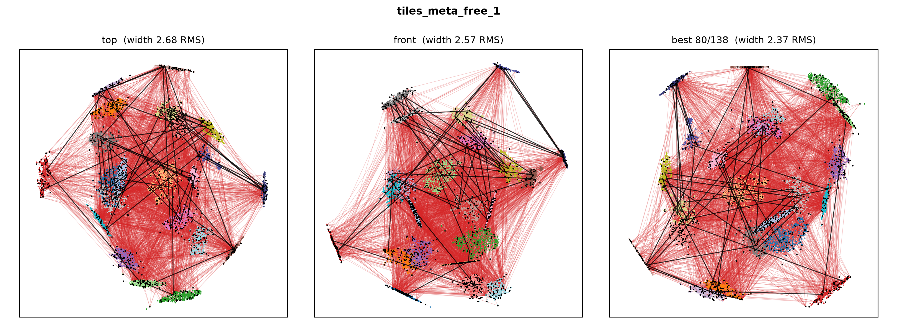 | tiles_meta_free_1 ⓘ | tiles | Tile layout (tiles_meta_free_1): one flat linlog layout per layer, tiles at a 3D spring layout of the layer graph (cross-layer + shared-entity affinity), facing outward; alignment free via entity reference; layer order auto; tiles rotated | 2.700 | 0.894 | ✓ | 79 | 0 | 1.00/0.96/0.73 | 0.005 | 0.000 | 0.334 | 0.033 | 1.209 | 36.700 | 0.765 | 0.766 | 0.812 | 2.138 | 0.961 | 0.260 | 0.153 | 0.268 | 2.323 | 0.647 | 80/138 | |
| 2 | 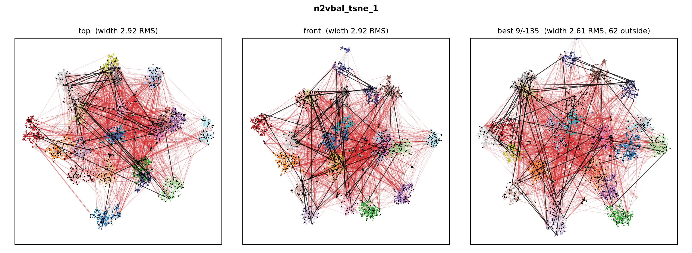 | n2vbal_tsne_1 ⓘ | n2vbal | node2vec (p=1, q=1) embedding + openTSNE(3D), giant component only | 35.600 | 0.886 | ✓ | 46 | 0 | 1.00/0.92/0.91 | 0.007 | 0.001 | 0.433 | 0.046 | 0.612 | 13.326 | 0.647 | 0.873 | 0.939 | 2.651 | 0.961 | 0.256 | 0.138 | 0.289 | 1.905 | 0.633 | 9/-135 | |
| 3 | 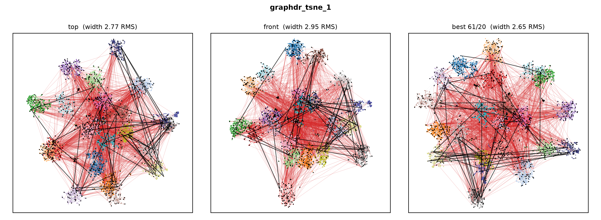 | graphdr_tsne_1 ⓘ | graphdr | Graph-direct t-SNE: openTSNE 3D on walk graph affinities, exaggeration 1 (1 = t-SNE, ~4 UMAP-like, ~12 FA2-like), spectral init | 13.700 | 0.846 | ✓ | 39 | 0 | 1.00/0.96/0.90 | 0.010 | 0.000 | 0.502 | 0.046 | 0.744 | 16.229 | 0.656 | 0.915 | 0.937 | 2.707 | 0.964 | 0.239 | 0.145 | 0.298 | 1.930 | 0.517 | 61/20 | |
| 4 | 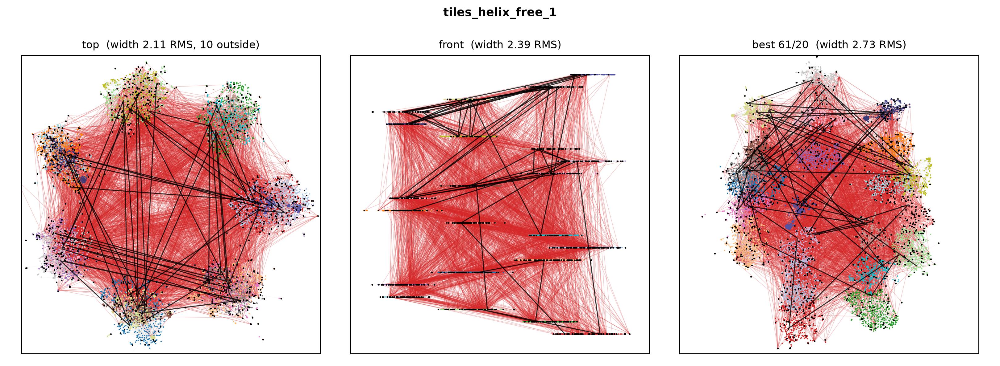 | tiles_helix_free_1 ⓘ | tiles | Tile layout (tiles_helix_free_1): one flat linlog layout per layer, helix, 7 tiles per turn, radius 2.88, rise 0.370 per tile; alignment free via entity reference; layer order auto; tiles rotated | 2.700 | 0.846 | ✓ | 10 | 0 | 1.00/0.87/0.78 | 0.007 | 0.000 | 0.333 | 0.042 | 1.332 | 31.999 | 0.689 | 0.868 | 0.858 | 2.139 | 0.960 | 0.183 | 0.154 | 0.268 | 2.168 | 0.392 | 61/20 | |
| 5 | 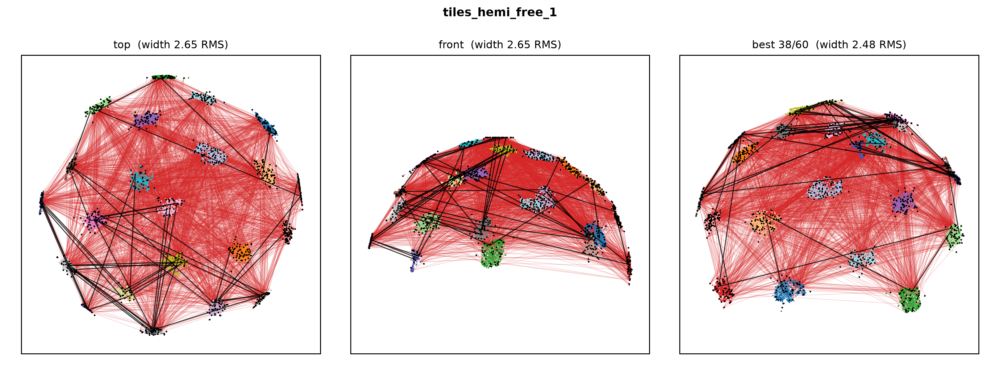 | tiles_hemi_free_1 ⓘ | tiles | Tile layout (tiles_hemi_free_1): one flat linlog layout per layer, hemisphere tiles (tangent planes) radius 8.20; layers assigned to slots by quadratic assignment on cross-layer/shared-entity affinity; alignment free via entity reference; layer order auto; tiles rotated | 1.500 | 0.821 | 76 | 0 | 1.00/0.96/0.50 | 0.003 | 0.000 | 0.335 | 0.022 | 1.209 | 54.825 | 0.813 | 0.716 | 0.797 | 2.139 | 0.961 | 0.237 | 0.175 | 0.268 | 2.620 | 0.810 | 38/60 | ||
| 6 | 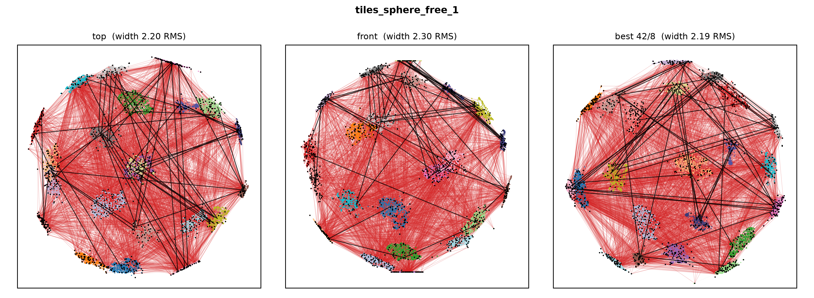 | tiles_sphere_free_1 ⓘ | tiles | Tile layout (tiles_sphere_free_1): one flat linlog layout per layer, sphere tiles (tangent planes) radius 5.73; layers assigned to slots by quadratic assignment on cross-layer/shared-entity affinity; alignment free via entity reference; layer order auto; tiles rotated | 2.700 | 0.813 | 78 | 0 | 1.00/0.95/0.92 | 0.004 | 0.000 | 0.335 | 0.027 | 1.369 | 50.635 | 0.795 | 0.771 | 0.865 | 2.139 | 0.961 | 0.159 | 0.156 | 0.268 | 2.491 | 0.682 | 42/8 | ||
| 7 | 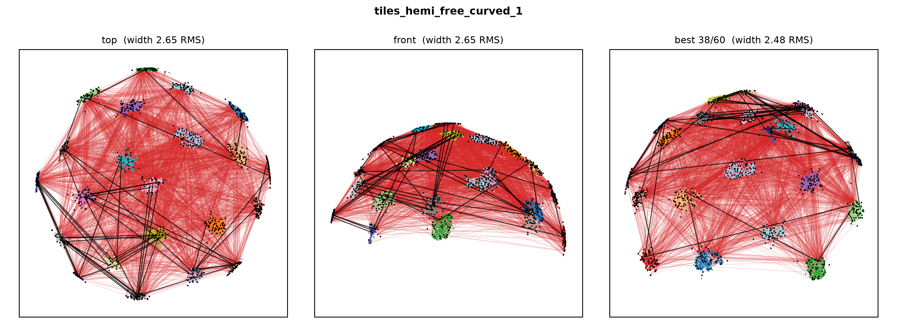 | tiles_hemi_free_curved_1 ⓘ | tiles | Tile layout (tiles_hemi_free_curved_1): one flat linlog layout per layer, hemisphere tiles (tangent planes) radius 8.20; layers assigned to slots by quadratic assignment on cross-layer/shared-entity affinity; tiles curved onto the sphere surface (radius 8.20); alignment free via entity reference; layer order auto; tiles rotated | 3.000 | 0.805 | 76 | near-dup | 0 | 1.00/0.96/0.50 | 0.003 | 0.000 | 0.335 | 0.022 | 1.209 | 54.731 | 0.812 | 0.716 | 0.797 | 2.141 | 0.961 | 0.237 | 0.175 | 0.268 | 2.619 | 0.810 | 38/60 | |
| 8 | 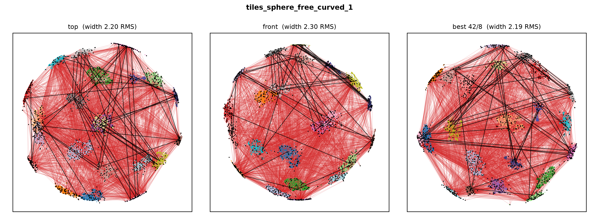 | tiles_sphere_free_curved_1 ⓘ | tiles | Tile layout (tiles_sphere_free_curved_1): one flat linlog layout per layer, sphere tiles (tangent planes) radius 5.73; layers assigned to slots by quadratic assignment on cross-layer/shared-entity affinity; tiles curved onto the sphere surface (radius 5.73); alignment free via entity reference; layer order auto; tiles rotated | 2.500 | 0.805 | 78 | near-dup | 0 | 1.00/0.95/0.92 | 0.004 | 0.000 | 0.335 | 0.027 | 1.371 | 50.493 | 0.794 | 0.771 | 0.861 | 2.140 | 0.961 | 0.156 | 0.156 | 0.267 | 2.489 | 0.684 | 42/8 | |
| 9 | 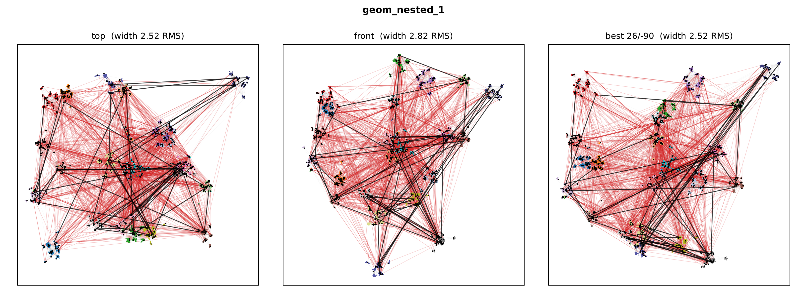 | geom_nested_1 ⓘ | geom | Nested spheres of the recursive Leiden hierarchy (491 leaf balls, depth 3); 3D spring layouts in the leaves | 7.200 | 0.780 | ✓ | 49 | 0 | 1.00/0.87/0.79 | 0.003 | 0.000 | 0.468 | 0.013 | 0.509 | 38.468 | 0.688 | 0.881 | 0.966 | 2.723 | 0.962 | 0.276 | 0.158 | 0.262 | 2.429 | 0.938 | 26/-90 | |
| 10 | 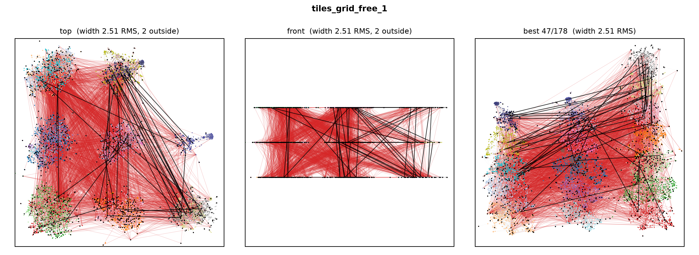 | tiles_grid_free_1 ⓘ | tiles | Tile layout (tiles_grid_free_1): one flat linlog layout per layer, grid of 3x3 stacks, 3 layers each (consecutive layers share a stack); alignment free via entity reference; layer order auto; tiles rotated | 2.400 | 0.780 | ✓ | 12 | 0 | 1.00/0.75/0.45 | 0.008 | 0.000 | 0.333 | 0.052 | 1.193 | 22.786 | 0.529 | 0.930 | 0.748 | 2.139 | 0.959 | 0.144 | 0.189 | 0.268 | 2.040 | 0.336 | 47/178 | |
| 11 | 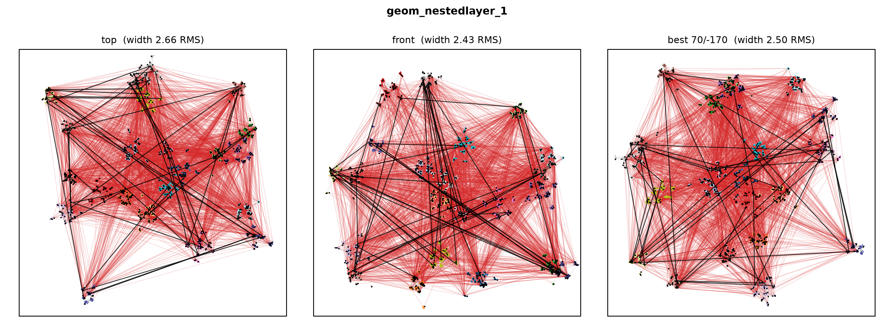 | geom_nestedlayer_1 ⓘ | geom | Nested spheres of the layer / recursive Leiden hierarchy (450 leaf balls, depth 3); 3D spring layouts in the leaves | 5.500 | 0.756 | ✓ | 51 | 0 | 1.00/0.89/0.81 | 0.003 | 0.000 | 0.457 | 0.011 | 1.178 | 110.230 | 0.826 | 0.926 | 1.011 | 2.612 | 0.958 | 0.271 | 0.158 | 0.264 | 2.403 | 0.927 | 70/-170 | |
| 12 | 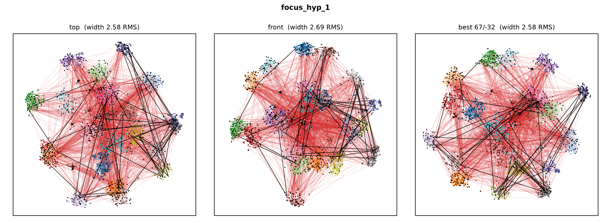 | focus_hyp_1 ⓘ | focus | Focus layout (hyp): Poincare ball recentred on the focus (Moebius translation); directions from graphdr_tsne_1 (from nodes.tsv) | 2.500 | 0.740 | ✓ | 39 | near-dup | 0 | 1.00/0.97/0.92 | 0.009 | 0.000 | 0.496 | 0.041 | 0.774 | 18.725 | 0.671 | 0.909 | 0.932 | 2.718 | 0.963 | 0.230 | 0.142 | 0.295 | 2.022 | 0.561 | 67/-32 |
| 13 | 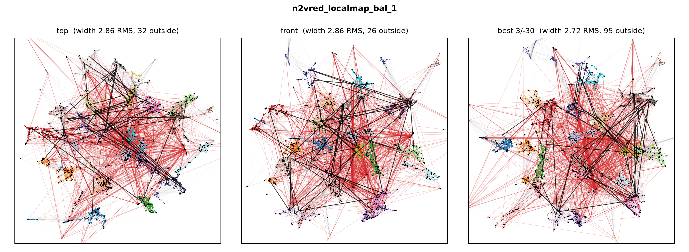 | n2vred_localmap_bal_1 ⓘ | n2vred | node2vec (p=1.0, q=1.0) embedding + localmap(3D), giant component only | 8.700 | 0.724 | ✓ | 45 | 0 | 1.00/0.93/0.90 | 0.006 | 0.000 | 0.287 | 0.043 | 0.509 | 11.727 | 0.529 | 0.866 | 0.927 | 2.732 | 0.957 | 0.251 | 0.146 | 0.270 | 1.905 | 0.718 | 3/-30 | |
| 14 | 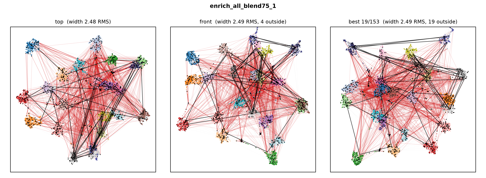 | enrich_all_blend75_1 ⓘ | enrich | Topology-function blend: UMAP 3D of [0.75 x node2vec (graph), 0.25 x all term SVD (function)], each L2-normalised | 7.300 | 0.715 | ✓ | 61 | 0 | 1.00/0.90/0.87 | 0.010 | 0.000 | 0.256 | 0.044 | 0.215 | 4.906 | 0.675 | 0.828 | 0.886 | 3.124 | 0.955 | 0.232 | 0.153 | 0.258 | 2.136 | 0.599 | 19/153 | |
| 15 | 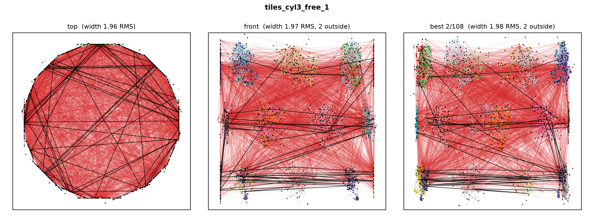 | tiles_cyl3_free_1 ⓘ | tiles | Tile layout (tiles_cyl3_free_1): one flat linlog layout per layer, cylinder, 3 rows x 8 tiles facing outward, radius 3.27; alignment free via entity reference; layer order auto; tiles rotated | 2.400 | 0.715 | 9 | 0 | 1.00/0.99/0.79 | 0.006 | 0.000 | 0.333 | 0.040 | 1.434 | 35.477 | 0.682 | 0.873 | 0.807 | 2.139 | 0.959 | 0.135 | 0.162 | 0.268 | 2.228 | 0.421 | 2/108 | ||
| 16 | 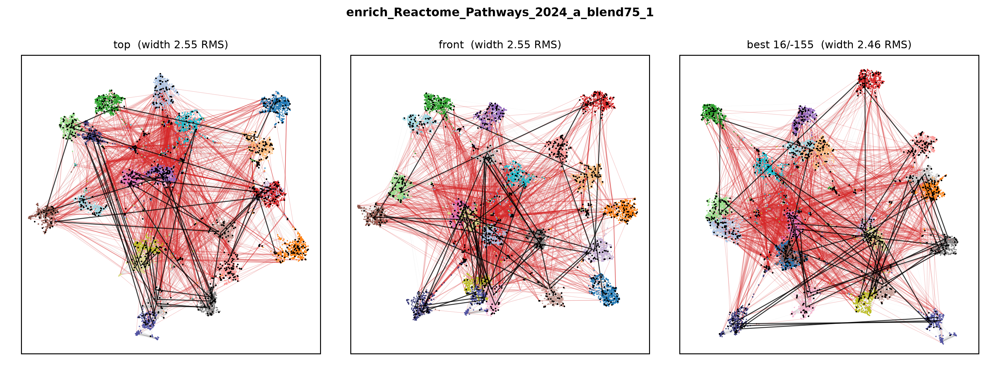 | enrich_Reactome_Pathways_2024_a_blend75_1 ⓘ | enrich | Topology-function blend: UMAP 3D of [0.75 x node2vec (graph), 0.25 x Reactome_Pathways_2024_a term SVD (function)], each L2-normalised | 5.500 | 0.707 | ✓ | 62 | 0 | 1.00/0.88/0.85 | 0.010 | 0.000 | 0.255 | 0.045 | 0.342 | 7.661 | 0.675 | 0.818 | 0.914 | 3.045 | 0.955 | 0.243 | 0.149 | 0.254 | 2.088 | 0.604 | 16/-155 | |
| 17 | 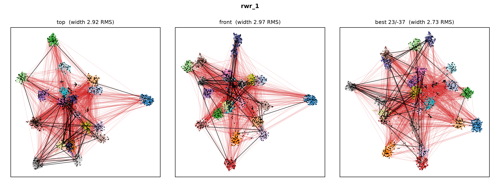 | rwr_1 ⓘ | rwr | Random-walk-with-restart feature landscape: personalized-PageRank visitation distribution per node embedded via UMAP -- a diffusion-based feature space rather than raw topology or a fixed annotation vector | 15.300 | 0.707 | ✓ | 65 | 0 | 1.00/0.96/0.84 | 0.012 | 0.000 | 0.240 | 0.048 | 0.596 | 12.543 | 0.723 | 0.867 | 0.902 | 2.188 | 0.961 | 0.276 | 0.161 | 0.275 | 2.111 | 0.601 | 23/-37 | |
| 18 | 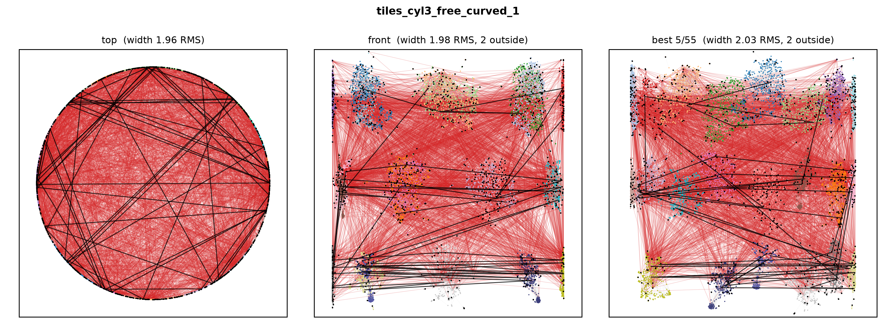 | tiles_cyl3_free_curved_1 ⓘ | tiles | Tile layout (tiles_cyl3_free_curved_1): one flat linlog layout per layer, cylinder, 3 rows x 8 tiles facing outward, radius 3.27; tiles curved onto the cylinder surface (radius 3.27); alignment free via entity reference; layer order auto; tiles rotated | 2.200 | 0.707 | ✓ | 9 | near-dup | 0 | 1.00/0.99/0.79 | 0.006 | 0.000 | 0.333 | 0.041 | 1.431 | 35.258 | 0.680 | 0.873 | 0.805 | 2.139 | 0.960 | 0.133 | 0.162 | 0.268 | 2.225 | 0.385 | 5/55 |
| 19 | 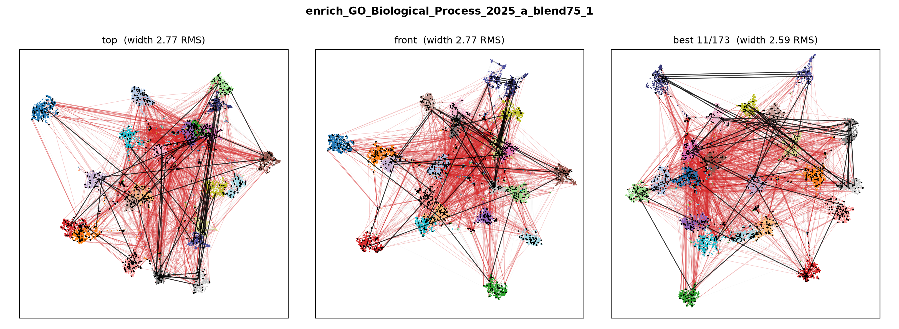 | enrich_GO_Biological_Process_2025_a_blend75_1 ⓘ | enrich | Topology-function blend: UMAP 3D of [0.75 x node2vec (graph), 0.25 x GO_Biological_Process_2025_a term SVD (function)], each L2-normalised | 4.300 | 0.699 | ✓ | 60 | 0 | 1.00/0.89/0.82 | 0.010 | 0.000 | 0.258 | 0.044 | 0.287 | 6.550 | 0.676 | 0.819 | 0.899 | 2.978 | 0.955 | 0.253 | 0.155 | 0.258 | 2.106 | 0.626 | 11/173 | |
| 20 | 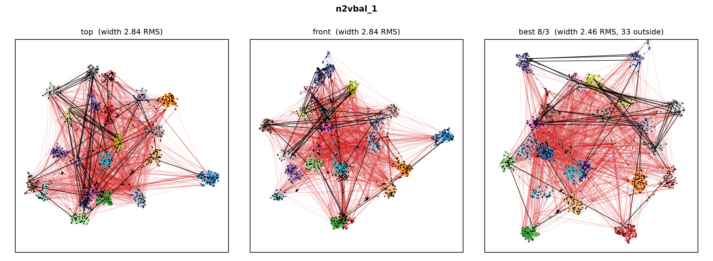 | n2vbal_1 ⓘ | n2vbal | node2vec (p=1, q=1) embedding + UMAP(3D), giant component only | 4.600 | 0.699 | 63 | 0 | 1.00/0.94/0.85 | 0.010 | 0.000 | 0.273 | 0.041 | 0.592 | 14.528 | 0.705 | 0.810 | 0.904 | 2.394 | 0.958 | 0.238 | 0.151 | 0.271 | 2.184 | 0.602 | 8/3 | ||
| 21 | 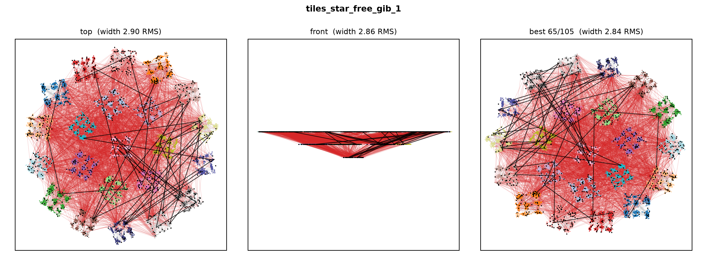 | tiles_star_free_gib_1 ⓘ | tiles | Tile layout (tiles_star_free_gib_1): one flat gib layout per layer, star: hub layer ATF3 in the centre, 21 layers on two terraced rings around it (inner = most tied to the hub, rings raised 0.3 x their radius: a bowl), cyclic seriation order; alignment free via entity reference; layer order auto; tiles rotated | 1.100 | 0.699 | ✓ | 77 | 0 | 1.00/0.97/0.14 | 0.006 | 0.000 | 0.320 | 0.021 | 1.102 | 51.506 | 0.615 | 0.761 | 0.981 | 2.429 | 0.951 | 0.213 | 0.197 | 0.247 | 2.040 | 0.379 | 65/105 | |
| 22 | 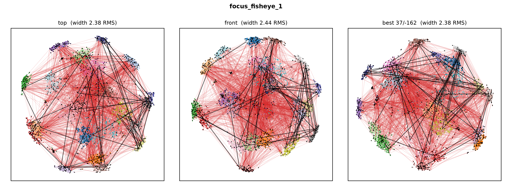 | focus_fisheye_1 ⓘ | focus | Focus layout (fisheye): Sarkar-Brown fisheye magnification around the focus; directions from graphdr_tsne_1 (from nodes.tsv) | 3.900 | 0.691 | 39 | near-dup | 0 | 1.00/0.98/0.94 | 0.007 | 0.000 | 0.465 | 0.037 | 0.812 | 21.981 | 0.640 | 0.882 | 0.937 | 2.635 | 0.959 | 0.212 | 0.143 | 0.273 | 2.120 | 0.595 | 37/-162 | |
| 23 | 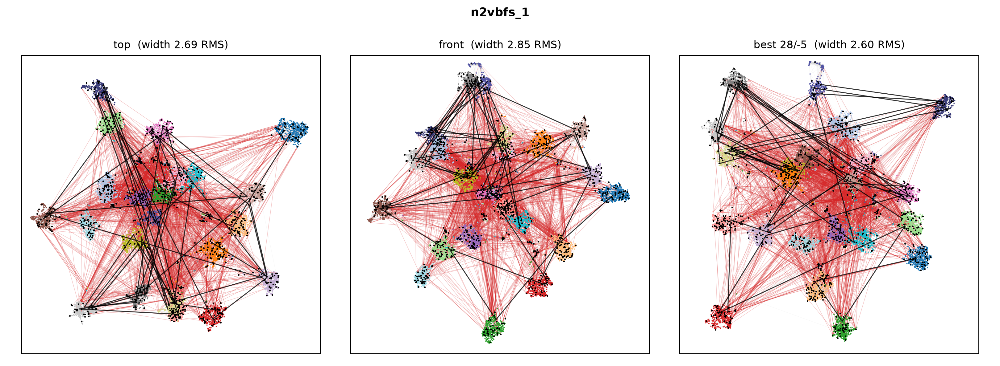 | n2vbfs_1 ⓘ | n2vbfs | node2vec (p=0.25, q=4) embedding + UMAP(3D), giant component only | 12.800 | 0.675 | ✓ | 64 | 0 | 1.00/0.95/0.90 | 0.010 | 0.000 | 0.255 | 0.043 | 0.558 | 12.932 | 0.708 | 0.898 | 0.945 | 2.412 | 0.963 | 0.279 | 0.153 | 0.283 | 2.153 | 0.619 | 28/-5 | |
| 24 | 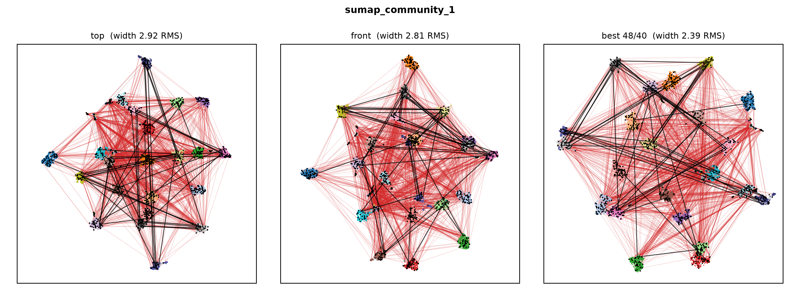 | sumap_community_1 ⓘ | sumap | Supervised UMAP of node2vec vectors, target = Leiden community, target_weight 0.5 | 4.900 | 0.675 | ✓ | 7 | 0 | 1.00/0.93/0.86 | 0.006 | 0.000 | 0.257 | 0.028 | 0.675 | 24.058 | 0.713 | 0.960 | 0.972 | 2.398 | 0.966 | 0.192 | 0.155 | 0.274 | 2.648 | 0.800 | 48/40 | |
| 25 | 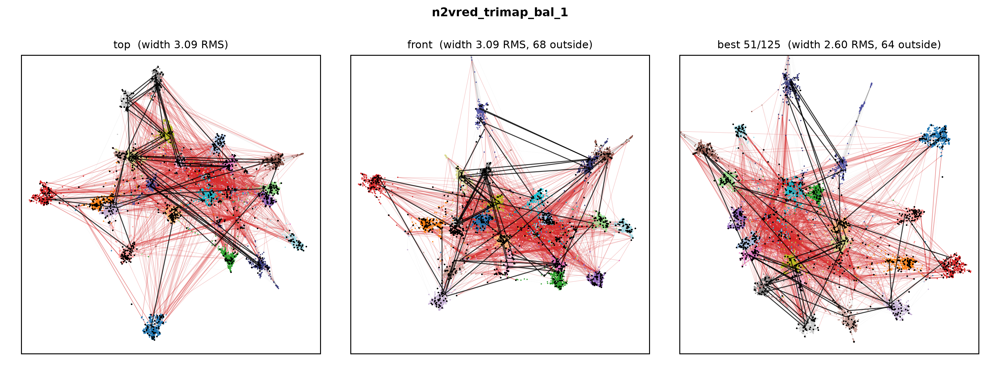 | n2vred_trimap_bal_1 ⓘ | n2vred | node2vec (p=1.0, q=1.0) embedding + trimap(3D), giant component only | 10.000 | 0.667 | ✓ | 47 | 0 | 1.00/0.84/0.65 | 0.008 | 0.000 | 0.215 | 0.039 | 0.239 | 6.125 | 0.679 | 0.853 | 0.870 | 2.270 | 0.954 | 0.332 | 0.162 | 0.243 | 2.037 | 0.695 | 51/125 | |
| 26 | 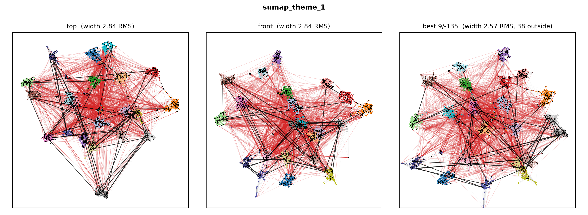 | sumap_theme_1 ⓘ | sumap | Supervised UMAP of node2vec vectors, target = best all theme in the node's layer (24 themes; none = unlabelled), target_weight 0.5 | 8.600 | 0.667 | 67 | 0 | 1.00/0.92/0.83 | 0.009 | 0.000 | 0.236 | 0.043 | 0.745 | 17.278 | 0.657 | 0.862 | 0.956 | 2.532 | 0.952 | 0.222 | 0.159 | 0.248 | 2.101 | 0.662 | 9/-135 | ||
| 27 | 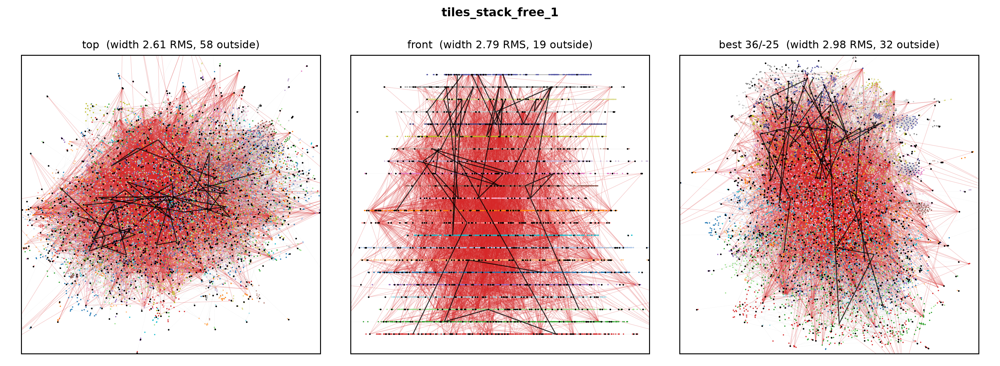 | tiles_stack_free_1 ⓘ | tiles | Tile layout (tiles_stack_free_1): one flat linlog layout per layer, stack, 22 planes, gap 0.095 (total height <= 1.0 x tile diameter); alignment free via entity reference; layer order auto; tiles rotated | 20.500 | 0.667 | ✓ | 23 | 0 | 1.00/0.80/0.54 | 0.030 | 0.000 | 0.316 | 0.188 | 1.143 | 6.079 | -0.020 | 0.620 | 0.608 | 2.083 | 0.706 | 0.188 | 0.167 | 0.156 | 1.102 | 0.187 | 36/-25 | |
| 28 | 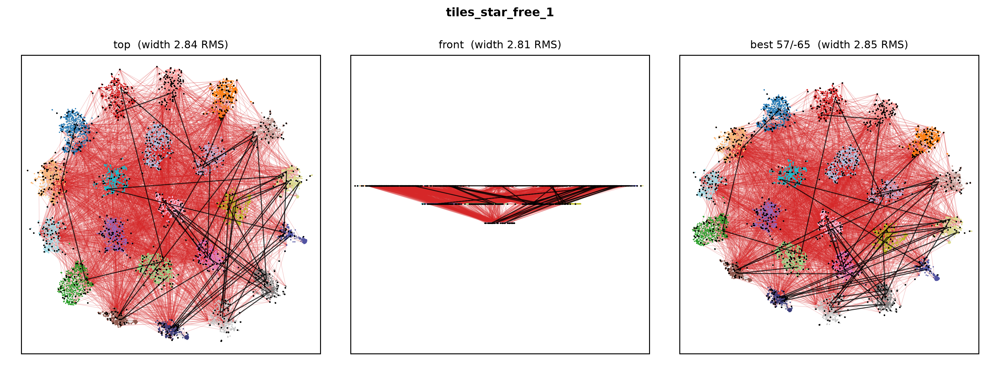 | tiles_star_free_1 ⓘ | tiles | Tile layout (tiles_star_free_1): one flat linlog layout per layer, star: hub layer ATF3 in the centre, 21 layers on two terraced rings around it (inner = most tied to the hub, rings raised 0.3 x their radius: a bowl), cyclic seriation order; alignment free via entity reference; layer order auto; tiles rotated | 3.000 | 0.667 | 77 | near-dup | 0 | 1.00/0.97/0.14 | 0.005 | 0.000 | 0.333 | 0.032 | 1.114 | 34.572 | 0.680 | 0.758 | 0.773 | 2.138 | 0.959 | 0.210 | 0.199 | 0.267 | 2.385 | 0.536 | 57/-65 | |
| 29 | 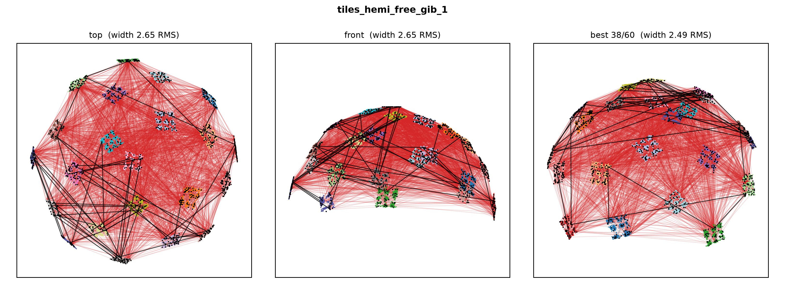 | tiles_hemi_free_gib_1 ⓘ | tiles | Tile layout (tiles_hemi_free_gib_1): one flat gib layout per layer, hemisphere tiles (tangent planes) radius 8.20; layers assigned to slots by quadratic assignment on cross-layer/shared-entity affinity; alignment free via entity reference; layer order auto; tiles rotated | 2.700 | 0.659 | 76 | near-dup | 0 | 1.00/0.96/0.50 | 0.004 | 0.000 | 0.320 | 0.015 | 1.214 | 82.866 | 0.779 | 0.718 | 0.981 | 2.427 | 0.951 | 0.237 | 0.173 | 0.247 | 2.322 | 0.793 | 38/60 | |
| 30 | 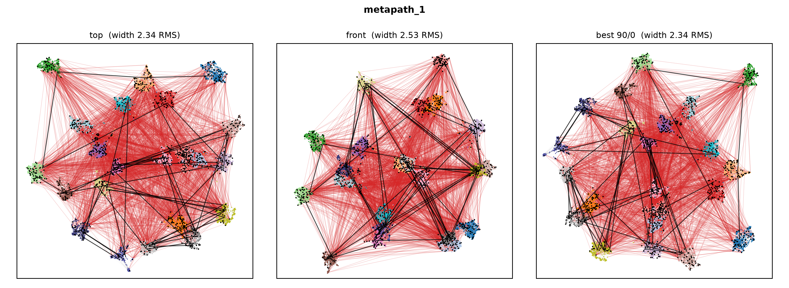 | metapath_1 ⓘ | metapath | Metapath-biased random walks (same-layer domain-continuity bias) + Word2Vec + UMAP(3D) | 16.400 | 0.650 | 66 | 0 | 1.00/0.94/0.88 | 0.008 | 0.000 | 0.254 | 0.035 | 1.081 | 30.707 | 0.804 | 0.905 | 0.963 | 2.199 | 0.961 | 0.209 | 0.158 | 0.274 | 2.350 | 0.667 | 90/0 | ||
| 31 | 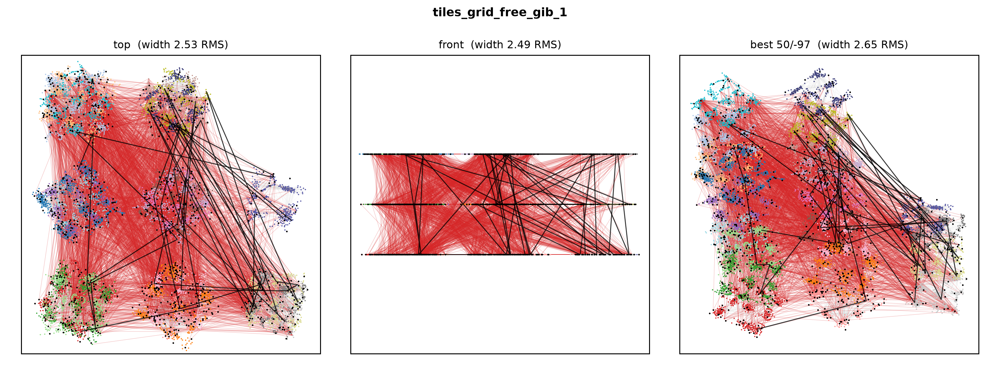 | tiles_grid_free_gib_1 ⓘ | tiles | Tile layout (tiles_grid_free_gib_1): one flat gib layout per layer, grid of 3x3 stacks, 3 layers each (consecutive layers share a stack); alignment free via entity reference; layer order auto; tiles rotated | 17.200 | 0.642 | ✓ | 13 | 0 | 1.00/0.75/0.45 | 0.010 | 0.000 | 0.320 | 0.035 | 1.187 | 34.270 | 0.468 | 0.944 | 0.953 | 2.429 | 0.950 | 0.148 | 0.187 | 0.247 | 1.711 | 0.167 | 50/-97 | |
| 32 | 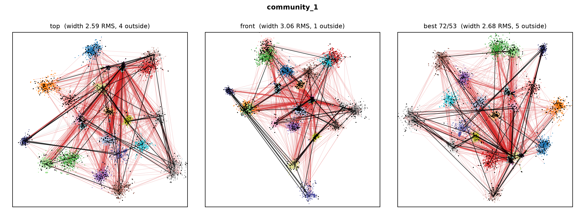 | community_1 ⓘ | community | Louvain community detection, meta-layout (ForceAtlas2 3D on the community graph), local sublayout per community | 8.800 | 0.634 | ✓ | 82 | 0 | 1.00/0.94/0.79 | 0.012 | 0.000 | 0.170 | 0.037 | 0.022 | 0.588 | 0.618 | 0.905 | 0.869 | 2.522 | 0.969 | 0.242 | 0.172 | 0.271 | 2.583 | 0.615 | 72/53 | |
| 33 | 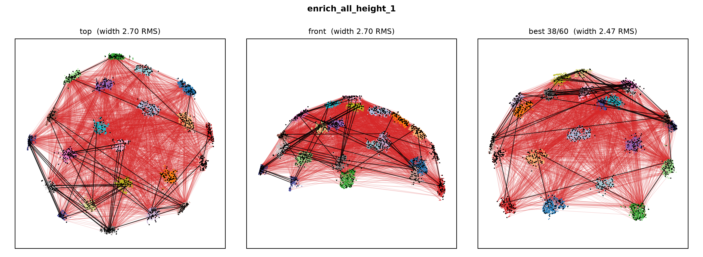 | enrich_all_height_1 ⓘ | enrich | Enrichment height: free hemisphere tiles, nodes lifted by the rank of -log10 q of their best all term in their own layer | 2.900 | 0.634 | ✓ | 76 | near-dup | 0 | 1.00/0.95/0.50 | 0.007 | 0.000 | 0.251 | 0.032 | 1.220 | 37.620 | 0.811 | 0.718 | 0.800 | 2.722 | 0.959 | 0.233 | 0.175 | 0.248 | 2.499 | 0.732 | 38/60 |
| 34 | 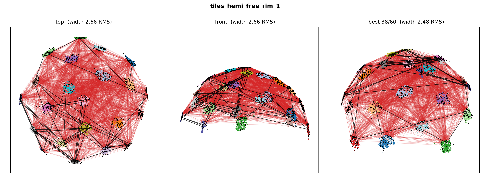 | tiles_hemi_free_rim_1 ⓘ | tiles | Tile layout (tiles_hemi_free_rim_1): one flat linlog layout per layer, hemisphere tiles (tangent planes) radius 8.20; layers assigned to slots by quadratic assignment on cross-layer/shared-entity affinity; alignment free via entity reference; layer order auto; tiles rotated; rim placement (1051 cross-layer nodes moved to the tile rim) | 2.800 | 0.634 | 76 | near-dup | 0 | 1.00/0.96/0.50 | 0.004 | 0.000 | 0.285 | 0.031 | 1.122 | 36.706 | 0.804 | 0.713 | 0.765 | 2.034 | 0.949 | 0.244 | 0.173 | 0.245 | 2.339 | 0.773 | 38/60 | |
| 35 | 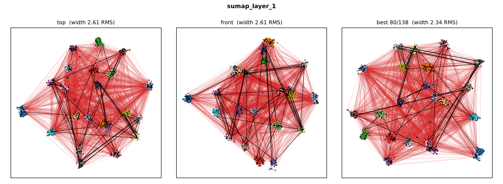 | sumap_layer_1 ⓘ | sumap | Supervised UMAP of node2vec vectors, target = layer, target_weight 0.5 | 4.700 | 0.626 | 8 | 0 | 1.00/0.96/0.90 | 0.007 | 0.000 | 0.250 | 0.028 | 1.220 | 44.196 | 0.853 | 0.946 | 0.983 | 2.154 | 0.959 | 0.184 | 0.158 | 0.273 | 2.539 | 0.792 | 80/138 | ||
| 36 | 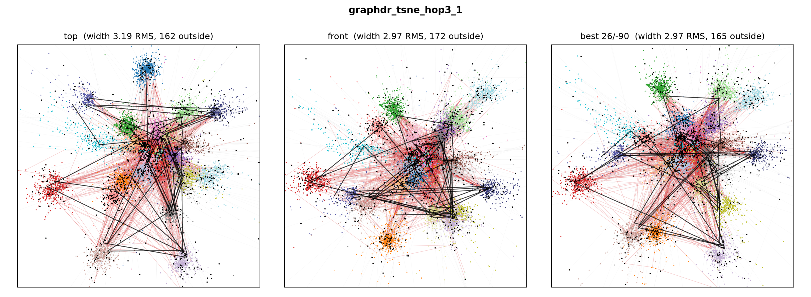 | graphdr_tsne_hop3_1 ⓘ | graphdr | Graph-direct t-SNE: openTSNE 3D on hop3 graph affinities, exaggeration 1 (1 = t-SNE, ~4 UMAP-like, ~12 FA2-like), spectral init | 17.900 | 0.618 | ✓ | 37 | 0 | 1.00/0.88/0.74 | 0.021 | 0.000 | 0.175 | 0.070 | 0.138 | 1.987 | 0.462 | 0.920 | 0.850 | 2.352 | 0.961 | 0.559 | 0.156 | 0.301 | 1.670 | 0.441 | 26/-90 | |
| 37 | 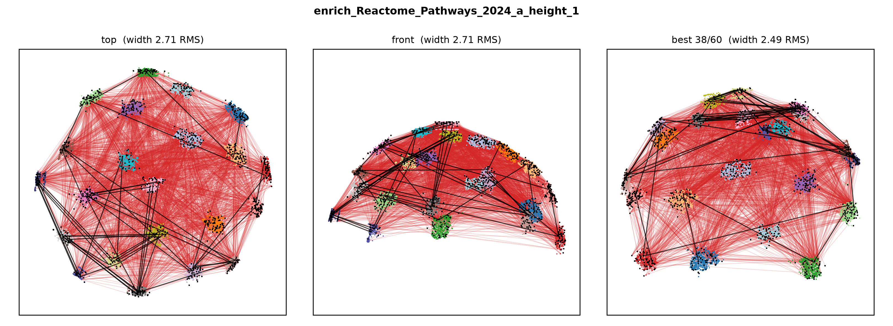 | enrich_Reactome_Pathways_2024_a_height_1 ⓘ | enrich | Enrichment height: free hemisphere tiles, nodes lifted by the rank of -log10 q of their best Reactome_Pathways_2024_a term in their own layer | 3.500 | 0.610 | ✓ | 76 | near-dup | 0 | 1.00/0.96/0.50 | 0.007 | 0.000 | 0.237 | 0.038 | 1.227 | 32.656 | 0.806 | 0.720 | 0.785 | 2.958 | 0.960 | 0.232 | 0.175 | 0.238 | 2.439 | 0.727 | 38/60 |
| 38 | 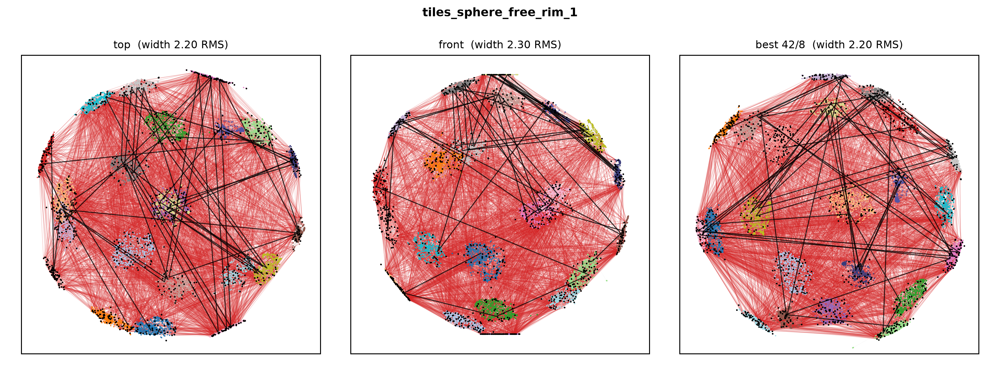 | tiles_sphere_free_rim_1 ⓘ | tiles | Tile layout (tiles_sphere_free_rim_1): one flat linlog layout per layer, sphere tiles (tangent planes) radius 5.73; layers assigned to slots by quadratic assignment on cross-layer/shared-entity affinity; alignment free via entity reference; layer order auto; tiles rotated; rim placement (1051 cross-layer nodes moved to the tile rim) | 2.500 | 0.610 | 78 | near-dup | 0 | 1.00/0.95/0.92 | 0.005 | 0.000 | 0.281 | 0.038 | 1.292 | 34.070 | 0.787 | 0.769 | 0.822 | 1.996 | 0.949 | 0.161 | 0.155 | 0.241 | 2.202 | 0.634 | 42/8 | |
| 39 | 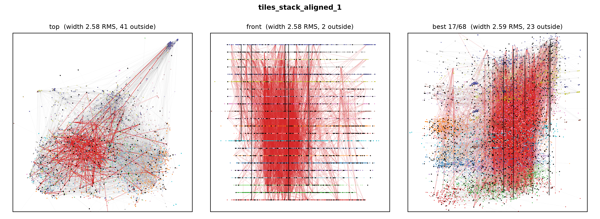 | tiles_stack_aligned_1 ⓘ | tiles | Tile layout (tiles_stack_aligned_1): one flat linlog layout per layer, stack, 22 planes, gap 0.095 (total height <= 1.0 x tile diameter); alignment aligned via entity reference; layer order auto; tiles not rotated | 2.100 | 0.610 | ✓ | 21 | 0 | 1.00/0.81/0.51 | 0.022 | 0.000 | 0.222 | 0.223 | 0.801 | 3.600 | -0.050 | 0.331 | 0.314 | 2.505 | 0.727 | 0.203 | 0.174 | 0.120 | 0.998 | 0.288 | 17/68 | |
| 40 | 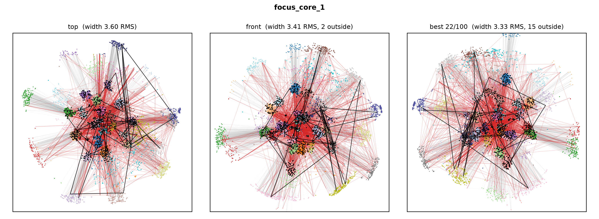 | focus_core_1 ⓘ | focus | Focus layout (core): focus module at full scale in the centre, the rest on an outer shell; directions from graphdr_tsne_1 (from nodes.tsv) | 3.500 | 0.602 | ✓ | 41 | 0 | 1.00/0.95/0.91 | 0.009 | 0.000 | 0.363 | 0.070 | 0.564 | 8.028 | 0.377 | 0.823 | 0.873 | 2.457 | 0.950 | 0.202 | 0.194 | 0.230 | 1.221 | 0.657 | 22/100 | |
| 41 | 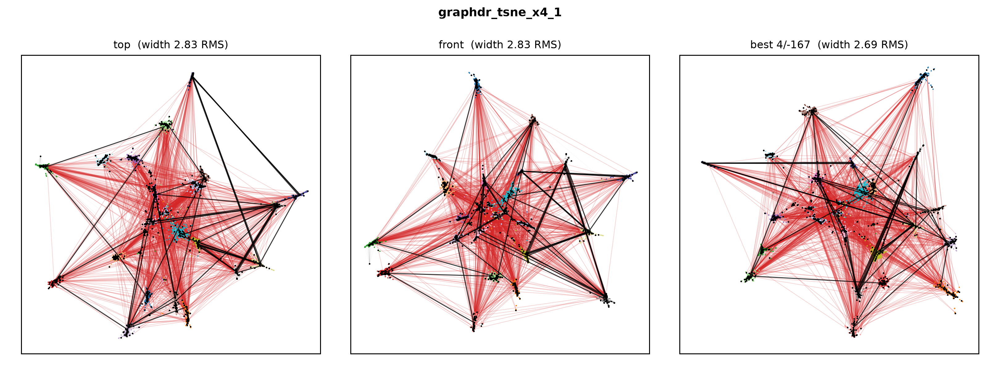 | graphdr_tsne_x4_1 ⓘ | graphdr | Graph-direct t-SNE: openTSNE 3D on walk graph affinities, exaggeration 4 (1 = t-SNE, ~4 UMAP-like, ~12 FA2-like), spectral init | 12.500 | 0.593 | ✓ | 40 | 0 | 1.00/0.95/0.90 | 0.002 | 0.000 | 0.176 | 0.011 | 0.556 | 51.356 | 0.836 | 0.931 | 0.897 | 1.966 | 0.961 | 0.305 | 0.167 | 0.226 | 3.067 | 0.912 | 4/-167 | |
| 42 | 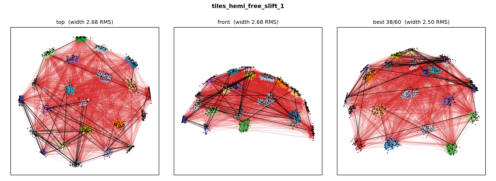 | tiles_hemi_free_slift_1 ⓘ | tiles | Tile layout (tiles_hemi_free_slift_1): one flat linlog layout per layer, hemisphere tiles (tangent planes) radius 8.20; layers assigned to slots by quadratic assignment on cross-layer/shared-entity affinity; alignment free via entity reference; layer order auto; tiles rotated | 3.200 | 0.593 | 76 | near-dup | 0 | 1.00/0.96/0.50 | 0.008 | 0.000 | 0.198 | 0.042 | 1.219 | 29.333 | 0.808 | 0.717 | 0.806 | 2.062 | 0.959 | 0.236 | 0.175 | 0.246 | 2.394 | 0.713 | 38/60 | |
| 43 | 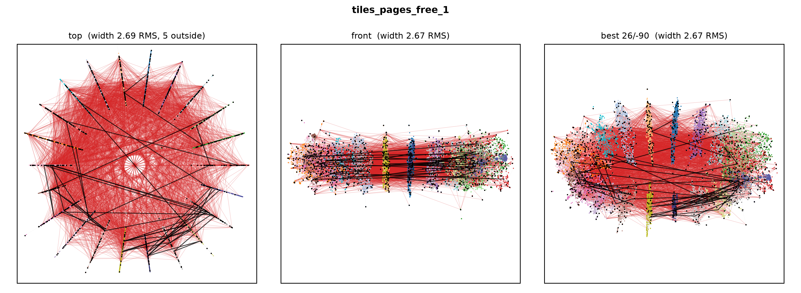 | tiles_pages_free_1 ⓘ | tiles | Tile layout (tiles_pages_free_1): one flat linlog layout per layer, cylinder pages (rolodex) around the z axis, 22 pages in cyclic order; alignment free via entity reference; layer order auto; tiles rotated | 2.500 | 0.585 | ✓ | 14 | 0 | 1.00/0.99/0.21 | 0.009 | 0.000 | 0.333 | 0.055 | 1.309 | 23.656 | 0.350 | 0.728 | 0.761 | 2.139 | 0.960 | 0.146 | 0.201 | 0.268 | 2.001 | 0.462 | 26/-90 | |
| 44 | 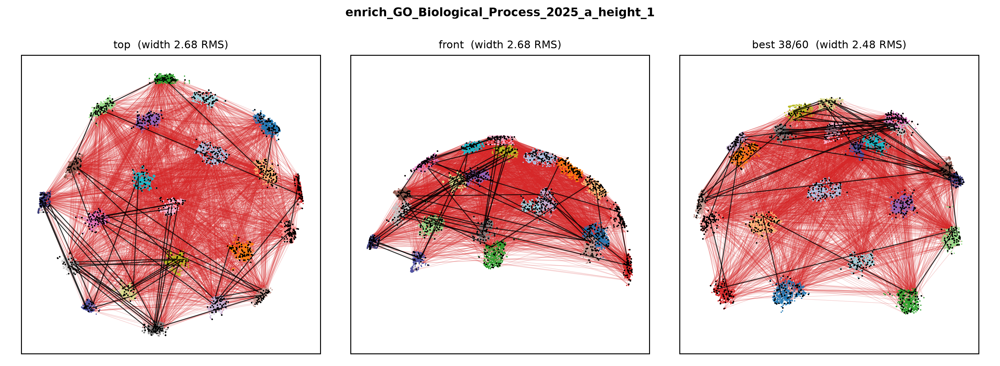 | enrich_GO_Biological_Process_2025_a_height_1 ⓘ | enrich | Enrichment height: free hemisphere tiles, nodes lifted by the rank of -log10 q of their best GO_Biological_Process_2025_a term in their own layer | 3.100 | 0.577 | 76 | near-dup | 0 | 1.00/0.96/0.50 | 0.008 | 0.000 | 0.231 | 0.038 | 1.220 | 32.223 | 0.808 | 0.721 | 0.795 | 2.387 | 0.959 | 0.233 | 0.175 | 0.242 | 2.428 | 0.717 | 38/60 | |
| 45 | 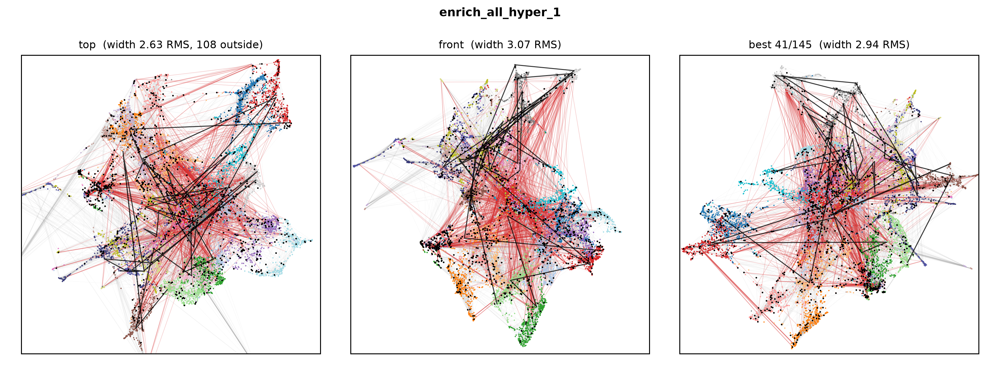 | enrich_all_hyper_1 ⓘ | enrich | Hypergraph + graph spectral embedding: 6807 all terms as hyperedges, beta 1, top 16 eigenvectors, UMAP 3D | 4.200 | 0.577 | ✓ | 57 | 0 | 1.00/0.83/0.70 | 0.014 | 0.000 | 0.167 | 0.124 | 0.162 | 1.307 | 0.117 | 0.667 | 0.725 | 3.586 | 0.839 | 0.230 | 0.159 | 0.167 | 1.359 | 0.452 | 41/145 | |
| 46 | 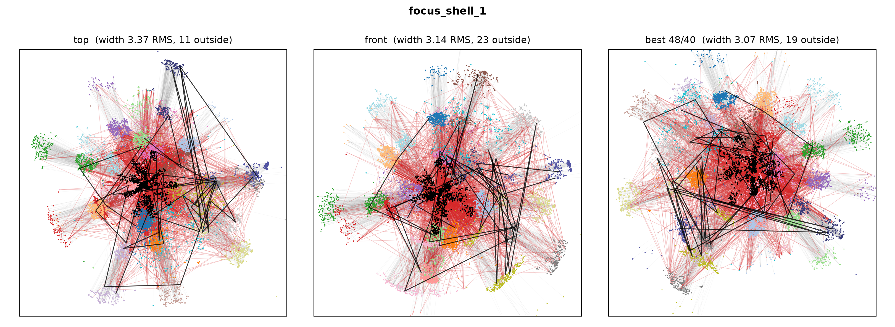 | focus_shell_1 ⓘ | focus | Focus layout (shell): shells by hop distance to the nearest focus node; directions from graphdr_tsne_1 (from nodes.tsv) | 4.700 | 0.569 | ✓ | 41 | near-dup | 0 | 1.00/0.97/0.93 | 0.013 | 0.000 | 0.221 | 0.509 | 0.626 | 1.228 | 0.374 | 0.895 | 0.775 | 2.355 | 0.927 | 0.207 | 0.160 | 0.197 | 0.856 | 0.473 | 48/40 |
| 47 | 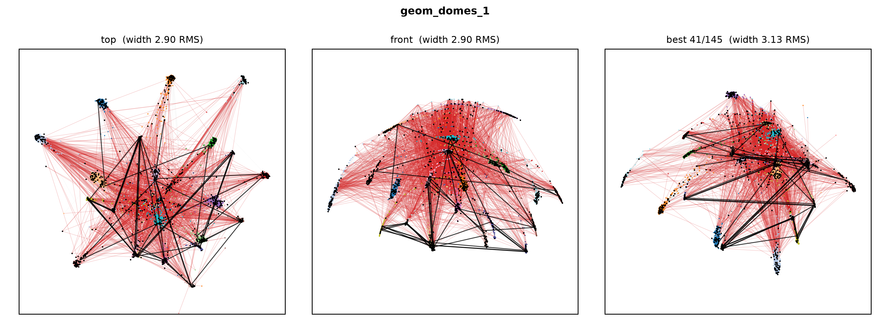 | geom_domes_1 ⓘ | geom | Nested domes: one hemisphere per layer (radius 1 + 0.08 x layer position), angular position = global LinLog layout (azimuthal equidistant inverse) | 2.900 | 0.569 | 4 | 0 | 1.00/0.98/0.65 | 0.002 | 0.000 | 0.289 | 0.012 | 0.610 | 49.194 | 0.703 | 0.947 | 0.914 | 2.156 | 0.944 | 0.143 | 0.175 | 0.244 | 2.437 | 0.914 | 41/145 | ||
| 48 | 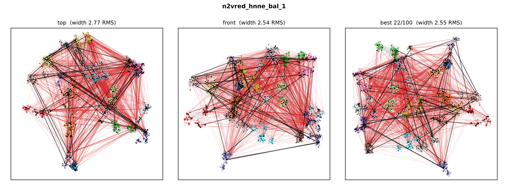 | n2vred_hnne_bal_1 ⓘ | n2vred | node2vec (p=1.0, q=1.0) embedding + hnne(3D), giant component only | 3.400 | 0.561 | 48 | 0 | 1.00/0.94/0.74 | 0.008 | 0.000 | 0.313 | 0.051 | 0.878 | 17.281 | 0.542 | 0.899 | 0.947 | 2.271 | 0.943 | 0.234 | 0.160 | 0.211 | 1.933 | 0.637 | 22/100 | ||
| 49 | 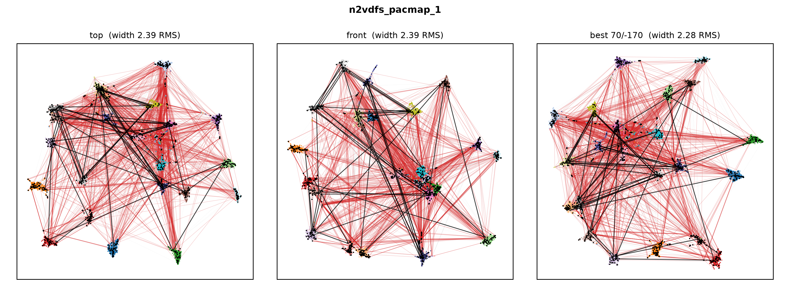 | n2vdfs_pacmap_1 ⓘ | n2vdfs | node2vec (p=4, q=0.25) embedding + PaCMAP(3D), giant component only | 15.100 | 0.553 | 50 | 0 | 1.00/0.93/0.90 | 0.004 | 0.000 | 0.210 | 0.021 | 0.247 | 11.902 | 0.739 | 0.909 | 0.920 | 2.293 | 0.957 | 0.239 | 0.155 | 0.236 | 2.710 | 0.876 | 70/-170 | ||
| 50 | 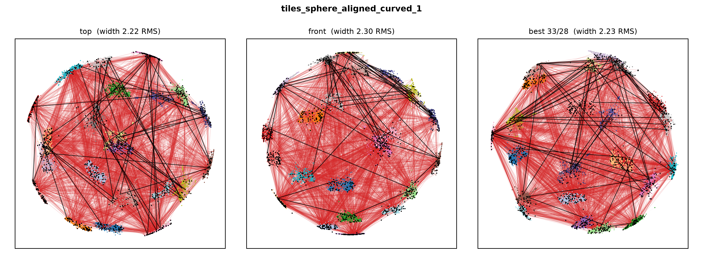 | tiles_sphere_aligned_curved_1 ⓘ | tiles | Tile layout (tiles_sphere_aligned_curved_1): one flat linlog layout per layer, sphere tiles (tangent planes) radius 5.73; layers assigned to slots by quadratic assignment on cross-layer/shared-entity affinity; tiles curved onto the sphere surface (radius 5.73); alignment aligned via entity reference; layer order auto; tiles not rotated | 0.800 | 0.545 | 78 | near-dup | 0 | 1.00/0.93/0.89 | 0.003 | 0.000 | 0.233 | 0.035 | 1.369 | 39.517 | 0.781 | 0.752 | 0.758 | 2.119 | 0.950 | 0.154 | 0.158 | 0.207 | 2.347 | 0.728 | 33/28 | |
| 51 | tiles_stack_half_1 ⓘ | tiles | Tile layout (tiles_stack_half_1): one flat linlog layout per layer, stack, 22 planes, gap 0.095 (total height <= 1.0 x tile diameter); alignment half via entity reference; layer order auto; tiles rotated | 2.400 | 0.545 | ✓ | 22 | 0 | 1.00/0.78/0.44 | 0.022 | 0.000 | 0.207 | 0.199 | 0.952 | 4.777 | -0.028 | 0.474 | 0.438 | 2.042 | 0.738 | 0.189 | 0.177 | 0.136 | 1.036 | 0.226 | 30/80 | ||
| 52 | joint_suprarwr_1 ⓘ | joint | Joint multilayer embedding (suprarwr), reducer umap | 92.400 | 0.537 | ✓ | 74 | 0 | 1.00/0.93/0.73 | 0.010 | 0.000 | 0.162 | 0.066 | 0.302 | 4.555 | 0.525 | 0.773 | 0.905 | 2.476 | 0.941 | 0.154 | 0.163 | 0.222 | 1.765 | 0.539 | 38/60 | ||
| 53 | geom_dome_1 ⓘ | geom | Dome / planetarium: one hemisphere, angular position = global LinLog layout (azimuthal equidistant inverse) | 4.100 | 0.528 | 3 | 0 | 1.00/0.98/0.53 | 0.002 | 0.000 | 0.300 | 0.013 | 0.293 | 22.577 | 0.656 | 0.979 | 0.888 | 2.187 | 0.943 | 0.181 | 0.181 | 0.247 | 2.630 | 0.904 | 43/-130 | |||
| 54 | n2vbal_pacmap_1 ⓘ | n2vbal | node2vec (p=1, q=1) embedding + PaCMAP(3D), giant component only | 6.500 | 0.528 | 44 | 0 | 1.00/0.97/0.88 | 0.004 | 0.001 | 0.198 | 0.020 | 0.271 | 13.278 | 0.729 | 0.870 | 0.898 | 2.309 | 0.954 | 0.225 | 0.155 | 0.237 | 2.730 | 0.921 | 23/-37 | |||
| 55 | supra_w1_1 ⓘ | supra | Supra-Laplacian spectral embedding, copy coupling omega=1, reducer umap | 4.000 | 0.528 | ✓ | 75 | 0 | 1.00/0.94/0.87 | 0.011 | 0.000 | 0.112 | 0.103 | 0.369 | 3.586 | 0.343 | 0.676 | 0.699 | 1.805 | 0.890 | 0.212 | 0.154 | 0.157 | 1.195 | 0.534 | 90/0 | ||
| 56 | engine_tfdp_free_1 ⓘ | engine | Native-3D GPU engine: tfdp main term, constraint free, copy springs 0; PivotMDS init, Adam 2000 iterations on cuda | 24.000 | 0.520 | ✓ | 52 | 0 | 1.00/0.93/0.90 | 0.059 | 0.000 | 0.185 | 0.192 | 0.354 | 1.848 | 0.138 | 0.849 | 0.834 | 2.109 | 0.845 | 0.456 | 0.108 | 0.169 | 0.754 | 0.156 | 67/-32 | ||
| 57 | enrich_Reactome_Pathways_2024_a_hyper_1 ⓘ | enrich | Hypergraph + graph spectral embedding: 1967 Reactome_Pathways_2024_a terms as hyperedges, beta 1, top 16 eigenvectors, UMAP 3D | 4.500 | 0.520 | ✓ | 83 | 0 | 1.00/0.90/0.67 | 0.012 | 0.000 | 0.171 | 0.115 | 0.146 | 1.266 | 0.185 | 0.796 | 0.771 | 3.840 | 0.867 | 0.218 | 0.178 | 0.170 | 1.480 | 0.507 | 30/80 | ||
| 58 | engine_tfdp_shells_1 ⓘ | engine | Native-3D GPU engine: tfdp main term, constraint shells, copy springs 0; PivotMDS init, Adam 2000 iterations on cuda | 23.700 | 0.512 | ✓ | 53 | 0 | 1.00/0.97/0.96 | 0.061 | 0.000 | 0.185 | 0.224 | 0.392 | 1.751 | 0.080 | 0.847 | 0.830 | 2.060 | 0.819 | 0.404 | 0.107 | 0.148 | 0.735 | 0.125 | 40/-77 | ||
| 59 | engine_tfdp_sphere_1 ⓘ | engine | Native-3D GPU engine: tfdp main term, constraint sphere, copy springs 0; PivotMDS init, Adam 2000 iterations on cuda | 22.300 | 0.512 | ✓ | 55 | 0 | 1.00/1.00/1.00 | 0.015 | 0.000 | 0.139 | 0.125 | 0.337 | 2.701 | 0.214 | 0.824 | 0.870 | 2.063 | 0.877 | 0.195 | 0.135 | 0.193 | 1.348 | 0.261 | 32/165 | ||
| 60 | geom_terrain_1 ⓘ | geom | Density terrain: global LinLog FA2 ground plane, z = smoothed point density (modules = hills) | 4.500 | 0.512 | 5 | 0 | 1.00/0.96/0.26 | 0.002 | 0.003 | 0.303 | 0.016 | 0.392 | 23.927 | 0.626 | 1.002 | 0.947 | 2.304 | 0.941 | 0.187 | 0.199 | 0.241 | 2.356 | 0.921 | 41/145 | |||
| 61 | geom_hilbertlayer_1 ⓘ | geom | 3D Hilbert curve (32^3 cells) through the layer / recursive Leiden hierarchy (450 leaves, depth 3); communities are compact blocks | 12.800 | 0.504 | ✓ | 15 | 0 | 1.00/1.00/1.00 | 0.063 | 0.000 | 0.184 | 0.234 | 1.373 | 5.868 | 0.140 | 0.854 | 1.024 | 1.697 | 0.805 | 0.065 | 0.164 | 0.141 | 0.977 | 0.000 | 17/68 | ||
| 62 | tiles_cyl2_free_curved_1 ⓘ | tiles | Tile layout (tiles_cyl2_free_curved_1): one flat linlog layout per layer, cylinder, 2 rows x 11 tiles facing outward, radius 4.44; tiles curved onto the cylinder surface (radius 4.44); alignment free via entity reference; layer order auto; tiles rotated | 2.200 | 0.496 | 11 | 0 | 1.00/0.98/0.41 | 0.005 | 0.000 | 0.333 | 0.034 | 1.401 | 41.775 | 0.676 | 0.924 | 0.839 | 2.137 | 0.960 | 0.127 | 0.188 | 0.267 | 2.402 | 0.547 | 23/-37 | |||
| 63 | alignedumap_r001_1 ⓘ | alignedumap | AlignedUMAP stack: one 2D UMAP per layer of its node2vec vectors, consecutive layers tied by shared entities (alignment_regularisation 0.001), z = layer | 27.700 | 0.488 | ✓ | 26 | 0 | 1.00/0.55/0.50 | 0.017 | 0.000 | 0.322 | 0.128 | 1.208 | 9.412 | -0.016 | 0.669 | 0.753 | 2.285 | 0.769 | 0.064 | 0.206 | 0.206 | 1.258 | 0.269 | 38/60 | ||
| 64 | tiles_hemi_free_sradial_1 ⓘ | tiles | Tile layout (tiles_hemi_free_sradial_1): one flat linlog layout per layer, hemisphere tiles (tangent planes) radius 8.20; layers assigned to slots by quadratic assignment on cross-layer/shared-entity affinity; alignment free via entity reference; layer order auto; tiles rotated | 2.700 | 0.488 | 76 | near-dup | 0 | 1.00/0.96/0.50 | 0.004 | 0.000 | 0.091 | 0.047 | 1.212 | 25.835 | 0.826 | 0.717 | 0.804 | 1.809 | 0.940 | 0.235 | 0.175 | 0.186 | 2.292 | 0.764 | 38/60 | ||
| 65 | feature_all_fa2_1 ⓘ | feature | ForceAtlas2 with feature-boosted edge weights: real edges' attraction raised by the Jaccard similarity of the endpoints' all terms, z-stacked | 2.600 | 0.480 | ✓ | 70 | 0 | 1.00/0.67/0.55 | 0.005 | 0.000 | 0.110 | 0.042 | 0.862 | 20.690 | 0.609 | 0.803 | 0.885 | 1.814 | 0.941 | 0.206 | 0.184 | 0.181 | 2.095 | 0.418 | 90/0 | ||
| 66 | geom_terraintiles_1 ⓘ | geom | Per-layer density terrain: 22 LinLog tiles on a 5x5 grid, each with its own relief | 3.600 | 0.472 | 18 | 0 | 1.00/0.82/0.09 | 0.009 | 0.000 | 0.300 | 0.056 | 1.287 | 23.055 | 0.615 | 0.910 | 0.956 | 2.089 | 0.953 | 0.119 | 0.222 | 0.247 | 2.171 | 0.561 | 42/8 | |||
| 67 | feature_Reactome_Pathways_2024_a_fa2_1 ⓘ | feature | ForceAtlas2 with feature-boosted edge weights: real edges' attraction raised by the Jaccard similarity of the endpoints' Reactome_Pathways_2024_a terms, z-stacked | 5.500 | 0.463 | ✓ | 70 | near-dup | 0 | 1.00/0.66/0.54 | 0.005 | 0.000 | 0.112 | 0.044 | 0.861 | 19.652 | 0.595 | 0.804 | 0.875 | 1.842 | 0.940 | 0.209 | 0.184 | 0.179 | 2.055 | 0.379 | 90/0 | |
| 68 | enrich_Reactome_Pathways_2024_a_blend50_1 ⓘ | enrich | Topology-function blend: UMAP 3D of [0.5 x node2vec (graph), 0.5 x Reactome_Pathways_2024_a term SVD (function)], each L2-normalised | 3.800 | 0.455 | ✓ | 36 | 0 | 1.00/0.90/0.79 | 0.016 | 0.000 | 0.166 | 0.451 | 0.504 | 1.118 | -0.047 | 0.446 | 0.506 | 4.715 | 0.767 | 0.139 | 0.182 | 0.095 | 0.965 | 0.361 | 9/-135 | ||
| 69 | feature_GO_Biological_Process_2025_a_fa2_1 ⓘ | feature | ForceAtlas2 with feature-boosted edge weights: real edges' attraction raised by the Jaccard similarity of the endpoints' GO_Biological_Process_2025_a terms, z-stacked | 3.300 | 0.455 | 70 | near-dup | 0 | 1.00/0.68/0.55 | 0.005 | 0.000 | 0.109 | 0.040 | 0.872 | 21.600 | 0.641 | 0.806 | 0.891 | 1.704 | 0.940 | 0.205 | 0.185 | 0.179 | 2.125 | 0.385 | 72/53 | ||
| 70 | tiles_cyl2_free_sradial_curved_1 ⓘ | tiles | Tile layout (tiles_cyl2_free_sradial_curved_1): one flat linlog layout per layer, cylinder, 2 rows x 11 tiles facing outward, radius 4.44; tiles curved onto the cylinder surface (radius 4.44); alignment free via entity reference; layer order auto; tiles rotated | 2.500 | 0.455 | 11 | near-dup | 0 | 1.00/0.98/0.42 | 0.005 | 0.000 | 0.091 | 0.071 | 1.406 | 19.689 | 0.701 | 0.926 | 0.823 | 1.816 | 0.940 | 0.125 | 0.188 | 0.186 | 2.024 | 0.547 | 38/60 | ||
| 71 | fa2_1 ⓘ | fa2 | ForceAtlas2 (shared xy, discrete z per layer) | 4.800 | 0.447 | 70 | near-dup | 0 | 1.00/0.66/0.55 | 0.005 | 0.000 | 0.103 | 0.041 | 0.876 | 21.494 | 0.630 | 0.798 | 0.901 | 1.636 | 0.940 | 0.205 | 0.186 | 0.178 | 2.126 | 0.449 | 90/0 | ||
| 72 | alignedumap_r1_1 ⓘ | alignedumap | AlignedUMAP stack: one 2D UMAP per layer of its node2vec vectors, consecutive layers tied by shared entities (alignment_regularisation 0.1), z = layer | 21.200 | 0.439 | ✓ | 27 | 0 | 1.00/0.64/0.50 | 0.022 | 0.000 | 0.301 | 0.164 | 1.190 | 7.241 | -0.028 | 0.521 | 0.486 | 2.302 | 0.729 | 0.060 | 0.196 | 0.177 | 1.146 | 0.210 | 38/60 | ||
| 73 | backbone_e03_1 ⓘ | backbone | Backbone layout: linlog FA2 on the strong-tie backbone (top ceil(deg^0.3) edges per node by neighbourhood Jaccard + maximum spanning forest), z-stacked by layer | 3.300 | 0.439 | ✓ | 81 | 0 | 1.00/0.83/0.66 | 0.002 | 0.000 | 0.327 | 0.029 | 1.078 | 36.695 | 0.421 | 0.839 | 1.044 | 2.216 | 0.909 | 0.138 | 0.188 | 0.188 | 1.891 | 0.829 | 50/-97 | ||
| 74 | enrich_GO_Biological_Process_2025_a_hyper_1 ⓘ | enrich | Hypergraph + graph spectral embedding: 4840 GO_Biological_Process_2025_a terms as hyperedges, beta 1, top 16 eigenvectors, UMAP 3D | 3.200 | 0.431 | ✓ | 56 | 0 | 1.00/0.81/0.73 | 0.016 | 0.000 | 0.149 | 0.157 | 0.200 | 1.281 | -0.001 | 0.500 | 0.623 | 3.442 | 0.783 | 0.144 | 0.173 | 0.143 | 1.247 | 0.351 | 10/-50 | ||
| 75 | fa2rarity_1 ⓘ | fa2rarity | ForceAtlas2 with per-layer_c endpoint pair rarity weighting (-ln(count/total), not the binary within/cross-layer split), z-stacked | 3.800 | 0.431 | ✓ | 71 | 0 | 1.00/0.62/0.49 | 0.006 | 0.000 | 0.098 | 0.052 | 0.856 | 16.486 | 0.560 | 0.778 | 0.880 | 1.649 | 0.940 | 0.210 | 0.189 | 0.174 | 1.919 | 0.320 | 76/-85 | ||
| 76 | supra_w0p1_1 ⓘ | supra | Supra-Laplacian spectral embedding, copy coupling omega=0.1, reducer umap | 3.900 | 0.431 | ✓ | 38 | 0 | 1.00/0.95/0.89 | 0.005 | 0.000 | 0.089 | 0.120 | 0.390 | 3.240 | 0.446 | 0.896 | 0.864 | 1.596 | 0.927 | 0.300 | 0.137 | 0.150 | 1.029 | 0.769 | 59/158 | ||
| 77 | supra_w10_1 ⓘ | supra | Supra-Laplacian spectral embedding, copy coupling omega=10, reducer umap | 3.600 | 0.431 | ✓ | 20 | 0 | 1.00/0.60/0.29 | 0.011 | 0.000 | 0.038 | 0.360 | 0.283 | 0.787 | -0.146 | 0.066 | 0.348 | 2.943 | 0.583 | 0.148 | 0.213 | 0.038 | 0.816 | 0.393 | 53/-12 | ||
| 78 | domaintouch_1 ⓘ | domaintouch | Centrality-elevation hybrid: fa2_1 xy + z from domain_touch_count | 5.700 | 0.415 | 1 | 0 | 1.00/0.90/0.52 | 0.007 | 0.000 | 0.092 | 0.061 | 0.987 | 16.303 | 0.391 | 0.909 | 0.852 | 1.795 | 0.927 | 0.145 | 0.243 | 0.171 | 1.806 | 0.403 | 48/40 | |||
| 79 | fa2spectral_1 ⓘ | fa2spectral | ForceAtlas2 seeded with a spectral embedding (fCoSE-style warm start), z-stacked | 6.000 | 0.415 | 69 | 0 | 1.00/0.62/0.54 | 0.005 | 0.000 | 0.104 | 0.038 | 0.887 | 23.147 | 0.612 | 0.741 | 0.841 | 1.683 | 0.940 | 0.197 | 0.196 | 0.180 | 2.199 | 0.482 | 63/-117 | |||
| 80 | topobet_1 ⓘ | topobet | Centrality-elevation hybrid: fa2_1 xy + z from betweenness_centrality | 11.300 | 0.415 | 2 | 0 | 1.00/0.90/0.14 | 0.010 | 0.000 | 0.085 | 0.080 | 0.481 | 5.991 | 0.429 | 0.988 | 0.877 | 1.765 | 0.923 | 0.315 | 0.194 | 0.164 | 1.693 | 0.470 | 48/40 | |||
| 81 | focus_tree_1 ⓘ | focus | Focus layout (tree): shortest-path forest from the focus, directions pulled toward the parent; directions from graphdr_tsne_1 (from nodes.tsv) | 3.700 | 0.398 | ✓ | 43 | 0 | 1.00/0.89/0.88 | 0.005 | 0.000 | 0.065 | 0.621 | 0.779 | 1.253 | 0.255 | 0.854 | 0.750 | 1.794 | 0.880 | 0.172 | 0.169 | 0.168 | 0.846 | 0.692 | 26/-90 | ||
| 82 | fa2_3 ⓘ | fa2 | ForceAtlas2 (cross-layer down-weighted, shared xy, discrete z per layer) | 4.000 | 0.390 | 72 | 0 | 1.00/0.73/0.62 | 0.003 | 0.000 | 0.118 | 0.023 | 0.980 | 43.141 | 0.796 | 0.819 | 0.899 | 1.743 | 0.945 | 0.176 | 0.187 | 0.195 | 2.581 | 0.740 | 70/-170 | |||
| 83 | enrich_Reactome_Pathways_2024_a_funcstack_1 ⓘ | enrich | Function stack: one 2D Reactome_Pathways_2024_a function map for all layers (entities), z = layer | 3.800 | 0.382 | ✓ | 29 | 0 | 1.00/0.24/0.12 | 0.003 | 0.000 | 0.135 | 0.182 | 1.088 | 5.966 | 0.143 | 0.532 | 0.112 | 3.692 | 0.892 | 0.074 | 0.323 | 0.099 | 1.343 | 0.592 | 67/-32 | ||
| 84 | enrich_all_blend50_1 ⓘ | enrich | Topology-function blend: UMAP 3D of [0.5 x node2vec (graph), 0.5 x all term SVD (function)], each L2-normalised | 4.300 | 0.382 | ✓ | 35 | 0 | 1.00/0.90/0.59 | 0.021 | 0.000 | 0.124 | 0.455 | 0.294 | 0.646 | -0.027 | 0.417 | 0.488 | 5.573 | 0.768 | 0.140 | 0.176 | 0.088 | 0.943 | 0.305 | 12/35 | ||
| 85 | spokes_score_1 ⓘ | spokes | Spokes: one axis per layer (22, QAP-assigned on a sphere), distance from the centre = within-layer rank of score (top outside), cross-section = the layer's LinLog tile in a 14 deg cone | 3.800 | 0.382 | ✓ | 59 | 0 | 1.00/0.95/0.91 | 0.029 | 0.000 | 0.078 | 0.414 | 1.489 | 3.601 | 0.305 | 0.795 | 0.878 | 1.780 | 0.927 | 0.094 | 0.190 | 0.136 | 0.818 | 0.252 | 47/178 | ||
| 86 | enrich_GO_Biological_Process_2025_a_blend50_1 ⓘ | enrich | Topology-function blend: UMAP 3D of [0.5 x node2vec (graph), 0.5 x GO_Biological_Process_2025_a term SVD (function)], each L2-normalised | 3.800 | 0.374 | ✓ | 34 | 0 | 1.00/0.87/0.77 | 0.024 | 0.000 | 0.119 | 0.515 | 0.501 | 0.973 | -0.051 | 0.367 | 0.446 | 4.219 | 0.743 | 0.132 | 0.173 | 0.085 | 0.860 | 0.266 | 1/-115 | ||
| 87 | backbone_e05_1 ⓘ | backbone | Backbone layout: linlog FA2 on the strong-tie backbone (top ceil(deg^0.5) edges per node by neighbourhood Jaccard + maximum spanning forest), z-stacked by layer | 4.900 | 0.366 | 17 | 0 | 1.00/0.76/0.71 | 0.002 | 0.000 | 0.330 | 0.016 | 1.055 | 66.158 | 0.620 | 0.896 | 1.026 | 2.280 | 0.928 | 0.135 | 0.191 | 0.208 | 2.305 | 0.901 | 61/20 | |||
| 88 | columns_w10_1 ⓘ | columns | Multilayer community columns: Leiden (RBConfiguration, resolution 1) on the supra-graph with copy coupling omega=10; one xy disc per community, copies share xy, z = layer | 5.000 | 0.366 | ✓ | 30 | 0 | 1.00/0.43/0.34 | 0.010 | 0.000 | 0.270 | 0.126 | 0.958 | 7.627 | -0.002 | 0.430 | 0.243 | 2.580 | 0.788 | 0.061 | 0.232 | 0.160 | 1.185 | 0.241 | 65/105 | ||
| 89 | enrich_all_termcols_1 ⓘ | enrich | Term columns: 24 all themes, each an xy disc shared by all layers; node -> disc of the anchor holding its most significant term in its layer; z = layer | 8.700 | 0.366 | ✓ | 25 | 0 | 1.00/0.70/0.57 | 0.013 | 0.000 | 0.131 | 0.685 | 1.371 | 2.003 | -0.044 | 0.441 | 0.346 | 4.039 | 0.728 | 0.014 | 0.203 | 0.080 | 0.792 | 0.362 | 63/-117 | ||
| 90 | enrich_all_snf_1 ⓘ | enrich | Similarity network fusion of 3 views (graph, GO_Biological_Process_2025_a, Reactome_Pathways_2024_a), t-SNE 3D on the fused affinity | 22.100 | 0.358 | ✓ | 96 | 0 | 1.00/0.92/0.71 | 0.007 | 0.000 | 0.081 | 0.934 | 0.315 | 0.337 | -0.103 | 0.008 | 0.164 | 9.137 | 0.536 | 0.066 | 0.182 | 0.032 | 0.690 | 0.634 | 6/-82 | ||
| 91 | focus_geo_1 ⓘ | focus | Focus layout (geo): radius = 1 - score rank (high scores in the core); directions from graphdr_tsne_1 (from nodes.tsv) | 3.600 | 0.358 | ✓ | 42 | 0 | 1.00/0.96/0.90 | 0.025 | 0.000 | 0.058 | 0.448 | 0.851 | 1.900 | 0.220 | 0.899 | 0.888 | 1.678 | 0.890 | 0.121 | 0.191 | 0.119 | 0.720 | 0.330 | 53/-12 | ||
| 92 | focus_geobands_1 ⓘ | focus | Focus layout (geobands): one latitude band per layer, depth = 1 - score rank within the layer; directions from graphdr_tsne_1 (from nodes.tsv) | 4.100 | 0.358 | ✓ | 80 | 0 | 1.00/0.85/0.57 | 0.019 | 0.000 | 0.052 | 0.398 | 0.982 | 2.465 | 0.157 | 0.747 | 0.839 | 1.551 | 0.882 | 0.132 | 0.190 | 0.111 | 0.739 | 0.285 | 51/125 | ||
| 93 | joint_suprarwr_w10_1 ⓘ | joint | Joint multilayer embedding (suprarwr), reducer umap | 14.800 | 0.358 | ✓ | 19 | 0 | 1.00/0.83/0.68 | 0.022 | 0.000 | 0.116 | 0.245 | 0.163 | 0.668 | -0.101 | 0.065 | 0.473 | 4.375 | 0.681 | -0.059 | 0.209 | 0.105 | 1.129 | 0.309 | 90/0 | ||
| 94 | enrich_all_magnets_1 ⓘ | enrich | Term magnets (magnets): 24 all themes as anchors on a sphere (QAP by similarity); nodes = harmonic mix of graph neighbours and their anchors; radii spread to fill the ball | 6.600 | 0.350 | ✓ | 88 | 0 | 1.00/0.80/0.65 | 0.025 | 0.000 | 0.013 | 0.729 | 0.593 | 0.814 | -0.088 | 0.067 | 0.136 | 5.828 | 0.514 | 0.135 | 0.254 | 0.011 | 0.657 | 0.397 | 40/-77 | ||
| 95 | enrich_all_umapand_1 ⓘ | enrich | UMAP model algebra: intersection (close in topology AND function) of the graph (node2vec) UMAP and the all function UMAP | 27.800 | 0.350 | ✓ | 94 | 0 | 1.00/0.73/0.63 | 0.029 | 0.000 | 0.062 | 0.600 | 0.364 | 0.607 | -0.117 | 0.048 | 0.230 | 8.113 | 0.549 | 0.041 | 0.192 | 0.038 | 0.786 | 0.219 | 19/153 | ||
| 96 | fa2sep_1 ⓘ | fa2sep | ForceAtlas2 run independently per layer (induced subgraphs), xy left overlapping across layers, z-stacked | 17.600 | 0.341 | 31 | 0 | 1.00/0.40/0.33 | 0.030 | 0.000 | 0.146 | 0.174 | 1.187 | 6.837 | 0.023 | 0.731 | 0.980 | 1.879 | 0.786 | 0.101 | 0.243 | 0.151 | 1.293 | 0.206 | 29/-142 | |||
| 97 | geom_mapper_1 ⓘ | geom | Mapper skeleton: lens = global LinLog, 14^2 cover (overlap 0.3), clusters = graph components per cell (574 clusters, 746 nerve edges), nerve by 3D spring layout; nodes at the mean of their clusters | 7.200 | 0.325 | 6 | 0 | 1.00/0.91/0.59 | 0.002 | 0.000 | 0.160 | 0.013 | 0.172 | 12.886 | 0.695 | 0.984 | 0.947 | 1.714 | 0.930 | 0.173 | 0.199 | 0.149 | 3.021 | 0.979 | 18/-70 | |||
| 98 | stack ⓘ | stack | 0.325 | ✓ | 16 | 0 | 1.00/0.05/0.05 | 0.005 | 0.000 | 0.091 | 0.028 | 1.109 | 39.490 | 0.530 | 0.717 | 0.918 | 1.755 | 0.957 | 0.134 | 0.358 | 0.217 | 3.013 | 0.230 | 90/0 | ||||
| 99 | enrich_all_funcstack_1 ⓘ | enrich | Function stack: one 2D all function map for all layers (entities), z = layer | 4.500 | 0.309 | ✓ | 33 | 0 | 1.00/0.82/0.65 | 0.020 | 0.000 | 0.090 | 0.648 | 0.959 | 1.481 | -0.026 | 0.323 | 0.105 | 5.533 | 0.657 | 0.062 | 0.190 | 0.049 | 0.701 | 0.260 | 28/-5 | ||
| 100 | tiles_ring_free_curved_1 ⓘ | tiles | Tile layout (tiles_ring_free_curved_1): one flat linlog layout per layer, ring of 22 tiles facing outward, radius 8.78; tiles curved onto the cylinder surface (radius 8.78); alignment free via entity reference; layer order auto; tiles rotated | 2.400 | 0.301 | 14 | near-dup | 0 | 1.00/0.99/0.07 | 0.003 | 0.000 | 0.335 | 0.018 | 1.435 | 81.123 | 0.682 | 0.709 | 0.791 | 2.136 | 0.961 | 0.124 | 0.227 | 0.267 | 2.852 | 0.863 | 30/80 | ||
| 101 | columns_w1_1 ⓘ | columns | Multilayer community columns: Leiden (RBConfiguration, resolution 1) on the supra-graph with copy coupling omega=1; one xy disc per community, copies share xy, z = layer | 10.600 | 0.293 | ✓ | 68 | 0 | 1.00/0.58/0.33 | 0.006 | 0.000 | 0.101 | 0.036 | 0.934 | 25.669 | 0.562 | 0.665 | 0.835 | 1.853 | 0.944 | 0.173 | 0.214 | 0.219 | 2.305 | 0.202 | 72/53 | ||
| 102 | enrich_Reactome_Pathways_2024_a_magnets_1 ⓘ | enrich | Term magnets (magnets): 24 Reactome_Pathways_2024_a themes as anchors on a sphere (QAP by similarity); nodes = harmonic mix of graph neighbours and their anchors; radii spread to fill the ball | 4.800 | 0.293 | ✓ | 86 | 0 | 1.00/0.85/0.78 | 0.024 | 0.000 | 0.021 | 0.708 | 0.533 | 0.753 | -0.088 | 0.070 | 0.161 | 5.875 | 0.522 | 0.130 | 0.243 | 0.014 | 0.686 | 0.378 | 41/145 | ||
| 103 | spokes_degree_1 ⓘ | spokes | Spokes: one axis per layer (22, QAP-assigned on a sphere), distance from the centre = within-layer rank of degree (top outside), cross-section = the layer's LinLog tile in a 14 deg cone | 3.800 | 0.293 | ✓ | 58 | 0 | 1.00/0.94/0.91 | 0.019 | 0.000 | 0.094 | 0.322 | 1.974 | 6.130 | 0.306 | 0.780 | 0.824 | 2.037 | 0.916 | -0.179 | 0.227 | 0.137 | 1.036 | 0.351 | 41/145 | ||
| 104 | enrich_Reactome_Pathways_2024_a_termcols_1 ⓘ | enrich | Term columns: 24 Reactome_Pathways_2024_a themes, each an xy disc shared by all layers; node -> disc of the anchor holding its most significant term in its layer; z = layer | 8.300 | 0.285 | ✓ | 24 | 0 | 1.00/0.61/0.51 | 0.011 | 0.000 | 0.134 | 0.653 | 1.329 | 2.036 | -0.020 | 0.466 | 0.276 | 4.023 | 0.755 | 0.012 | 0.208 | 0.082 | 0.776 | 0.448 | 43/-130 | ||
| 105 | enrich_GO_Biological_Process_2025_a_termcols_1 ⓘ | enrich | Term columns: 24 GO_Biological_Process_2025_a themes, each an xy disc shared by all layers; node -> disc of the anchor holding its most significant term in its layer; z = layer | 14.100 | 0.268 | ✓ | 32 | 0 | 1.00/0.68/0.41 | 0.009 | 0.000 | 0.094 | 0.712 | 1.296 | 1.820 | -0.011 | 0.389 | 0.191 | 2.974 | 0.807 | 0.004 | 0.229 | 0.100 | 0.827 | 0.423 | 41/145 | ||
| 106 | enrich_Reactome_Pathways_2024_a_snf_1 ⓘ | enrich | Similarity network fusion of 2 views (graph, Reactome_Pathways_2024_a), t-SNE 3D on the fused affinity | 17.700 | 0.268 | ✓ | 98 | 0 | 1.00/0.65/0.64 | 0.004 | 0.000 | 0.111 | 0.892 | 0.271 | 0.304 | -0.110 | 0.008 | 0.157 | 8.356 | 0.549 | -0.022 | 0.199 | 0.041 | 0.743 | 0.706 | 72/53 | ||
| 107 | engine_stress_free_1 ⓘ | engine | Native-3D GPU engine: stress main term, constraint free, copy springs 0; PivotMDS init, Adam 2000 iterations on cuda | 18.200 | 0.260 | ✓ | 54 | 0 | 1.00/0.94/0.94 | 0.054 | 0.000 | 0.033 | 0.373 | 0.286 | 0.768 | 0.043 | 0.828 | 0.841 | 1.641 | 0.783 | 0.642 | 0.079 | 0.097 | 0.413 | 0.143 | 59/158 | ||
| 108 | spokes_degree_needle_1 ⓘ | spokes | Spokes: one axis per layer (22, QAP-assigned on a sphere), distance from the centre = within-layer rank of degree (top outside), cross-section = the layer's LinLog tile in a 4 deg cone | 4.100 | 0.252 | 58 | near-dup | 0 | 1.00/0.94/0.91 | 0.005 | 0.000 | 0.068 | 0.303 | 1.979 | 6.537 | 0.372 | 0.777 | 0.809 | 1.901 | 0.921 | -0.178 | 0.228 | 0.112 | 1.087 | 0.684 | 41/145 | ||
| 109 | enrich_all_blend25_1 ⓘ | enrich | Topology-function blend: UMAP 3D of [0.25 x node2vec (graph), 0.75 x all term SVD (function)], each L2-normalised | 4.900 | 0.244 | ✓ | 91 | 0 | 1.00/0.74/0.65 | 0.006 | 0.000 | 0.048 | 1.045 | 0.570 | 0.545 | -0.084 | 0.008 | 0.100 | 10.764 | 0.521 | 0.059 | 0.204 | 0.020 | 0.648 | 0.705 | 46/-45 | ||
| 110 | enrich_GO_Biological_Process_2025_a_funcstack_1 ⓘ | enrich | Function stack: one 2D GO_Biological_Process_2025_a function map for all layers (entities), z = layer | 6.900 | 0.236 | ✓ | 28 | 0 | 1.00/0.36/0.26 | 0.011 | 0.000 | 0.091 | 0.297 | 1.038 | 3.499 | 0.048 | 0.500 | 0.141 | 3.003 | 0.811 | 0.066 | 0.295 | 0.076 | 1.077 | 0.385 | 54/-150 | ||
| 111 | fa2_2 ⓘ | fa2 | ForceAtlas2 (linlog + dissuade_hubs, shared xy, discrete z per layer) | 4.700 | 0.236 | 73 | 0 | 1.00/0.73/0.69 | 0.001 | 0.017 | 0.331 | 0.011 | 0.996 | 91.953 | 0.808 | 0.865 | 0.956 | 2.146 | 0.944 | 0.060 | 0.204 | 0.236 | 2.705 | 0.932 | 50/-97 | |||
| 112 | enrich_all_shells_1 ⓘ | enrich | Term magnets (shells): 24 all themes as anchors on a sphere (QAP by similarity); nodes = harmonic mix of graph neighbours and their anchors; each layer a concentric shell (copies on one radius) | 3.800 | 0.220 | ✓ | 89 | 0 | 1.00/0.80/0.65 | 0.038 | 0.000 | 0.033 | 0.676 | 0.723 | 1.071 | -0.100 | 0.203 | 0.180 | 3.499 | 0.572 | 0.086 | 0.248 | 0.025 | 0.733 | 0.294 | 40/-77 | ||
| 113 | enrich_Reactome_Pathways_2024_a_shells_1 ⓘ | enrich | Term magnets (shells): 24 Reactome_Pathways_2024_a themes as anchors on a sphere (QAP by similarity); nodes = harmonic mix of graph neighbours and their anchors; each layer a concentric shell (copies on one radius) | 4.000 | 0.211 | ✓ | 87 | 0 | 1.00/0.84/0.80 | 0.038 | 0.000 | 0.046 | 0.677 | 0.694 | 1.026 | -0.095 | 0.205 | 0.202 | 3.708 | 0.571 | 0.082 | 0.232 | 0.028 | 0.739 | 0.309 | 47/178 | ||
| 114 | enrich_Reactome_Pathways_2024_a_umapand_1 ⓘ | enrich | UMAP model algebra: intersection (close in topology AND function) of the graph (node2vec) UMAP and the Reactome_Pathways_2024_a function UMAP | 35.100 | 0.203 | ✓ | 93 | 0 | 1.00/0.83/0.60 | 0.015 | 0.000 | 0.077 | 0.642 | 0.442 | 0.688 | -0.117 | 0.028 | 0.253 | 8.137 | 0.551 | 0.079 | 0.224 | 0.036 | 0.813 | 0.427 | 37/-162 | ||
| 115 | enrich_Reactome_Pathways_2024_a_blend25_1 ⓘ | enrich | Topology-function blend: UMAP 3D of [0.25 x node2vec (graph), 0.75 x Reactome_Pathways_2024_a term SVD (function)], each L2-normalised | 3.800 | 0.195 | ✓ | 92 | 0 | 1.00/0.78/0.55 | 0.005 | 0.000 | 0.086 | 0.930 | 0.478 | 0.514 | -0.097 | 0.011 | 0.146 | 8.128 | 0.543 | 0.062 | 0.209 | 0.031 | 0.714 | 0.788 | 38/60 | ||
| 116 | enrich_GO_Biological_Process_2025_a_snf_1 ⓘ | enrich | Similarity network fusion of 2 views (graph, GO_Biological_Process_2025_a), t-SNE 3D on the fused affinity | 18.600 | 0.187 | ✓ | 97 | 0 | 1.00/0.65/0.59 | 0.005 | 0.000 | 0.083 | 0.887 | 0.205 | 0.231 | -0.096 | 0.007 | 0.148 | 8.024 | 0.546 | -0.008 | 0.200 | 0.039 | 0.721 | 0.652 | 18/-70 | ||
| 117 | enrich_GO_Biological_Process_2025_a_umapand_1 ⓘ | enrich | UMAP model algebra: intersection (close in topology AND function) of the graph (node2vec) UMAP and the GO_Biological_Process_2025_a function UMAP | 35.700 | 0.187 | ✓ | 95 | 0 | 1.00/0.81/0.70 | 0.021 | 0.000 | 0.052 | 0.762 | 0.541 | 0.710 | -0.110 | 0.029 | 0.193 | 7.579 | 0.533 | 0.045 | 0.191 | 0.029 | 0.696 | 0.314 | 34/-110 | ||
| 118 | enrich_GO_Biological_Process_2025_a_blend25_1 ⓘ | enrich | Topology-function blend: UMAP 3D of [0.25 x node2vec (graph), 0.75 x GO_Biological_Process_2025_a term SVD (function)], each L2-normalised | 11.700 | 0.179 | ✓ | 90 | 0 | 1.00/0.92/0.60 | 0.006 | 0.000 | 0.050 | 0.994 | 0.807 | 0.811 | -0.092 | 0.008 | 0.107 | 8.010 | 0.524 | 0.047 | 0.219 | 0.022 | 0.670 | 0.685 | 33/28 | ||
| 119 | enrich_GO_Biological_Process_2025_a_shells_1 ⓘ | enrich | Term magnets (shells): 24 GO_Biological_Process_2025_a themes as anchors on a sphere (QAP by similarity); nodes = harmonic mix of graph neighbours and their anchors; each layer a concentric shell (copies on one radius) | 3.700 | 0.163 | ✓ | 85 | 0 | 1.00/0.88/0.81 | 0.032 | 0.000 | 0.046 | 0.566 | 0.649 | 1.147 | -0.085 | 0.283 | 0.262 | 2.470 | 0.598 | 0.111 | 0.260 | 0.037 | 0.801 | 0.375 | 22/100 | ||
| 120 | enrich_GO_Biological_Process_2025_a_magnets_1 ⓘ | enrich | Term magnets (magnets): 24 GO_Biological_Process_2025_a themes as anchors on a sphere (QAP by similarity); nodes = harmonic mix of graph neighbours and their anchors; radii spread to fill the ball | 4.700 | 0.154 | ✓ | 84 | 0 | 1.00/0.89/0.79 | 0.023 | 0.000 | 0.017 | 0.621 | 0.446 | 0.719 | -0.111 | 0.120 | 0.248 | 3.367 | 0.523 | 0.162 | 0.273 | 0.016 | 0.727 | 0.478 | 54/-150 | ||
| 121 | aligned ⓘ | aligned | 0.138 | 16 | near-dup | 0 | 1.00/0.04/0.03 | 0.002 | 0.003 | 0.064 | 0.023 | 1.106 | 47.716 | 0.662 | 0.714 | 0.315 | 1.715 | 0.947 | 0.135 | 0.362 | 0.163 | 3.119 | 0.542 | 80/138 | ||||
| 122 | feature_Reactome_Pathways_2024_a_landscape_1 ⓘ | feature | Feature landscape: TF-IDF Reactome_Pathways_2024_a terms (unannotated nodes take their neighbours' mean profile, 1-2 hops) -> TruncatedSVD -> UMAP 3D | 4.800 | 0.089 | 101 | 0 | 1.00/0.67/0.32 | 0.002 | 0.000 | 0.048 | 0.602 | 0.408 | 0.678 | -0.134 | 0.005 | 0.168 | 8.270 | 0.532 | 0.056 | 0.421 | 0.024 | 1.021 | 0.991 | 30/80 | |||
| 123 | feature_GO_Biological_Process_2025_a_landscape_1 ⓘ | feature | Feature landscape: TF-IDF GO_Biological_Process_2025_a terms (unannotated nodes take their neighbours' mean profile, 1-2 hops) -> TruncatedSVD -> UMAP 3D | 4.400 | 0.049 | 99 | 0 | 1.00/0.56/0.40 | 0.002 | 0.000 | 0.034 | 0.767 | 0.635 | 0.828 | -0.118 | 0.004 | 0.103 | 7.912 | 0.513 | 0.014 | 0.388 | 0.016 | 1.043 | 0.932 | 53/-12 | |||
| 124 | feature_all_landscape_1 ⓘ | feature | Feature landscape: TF-IDF all terms (unannotated nodes take their neighbours' mean profile, 1-2 hops) -> TruncatedSVD -> UMAP 3D | 4.600 | 0.041 | 100 | 0 | 1.00/0.52/0.33 | 0.002 | 0.000 | 0.028 | 0.892 | 0.596 | 0.668 | -0.108 | 0.004 | 0.116 | 10.249 | 0.514 | 0.054 | 0.299 | 0.015 | 0.770 | 0.961 | 30/80 |
| metric | meaning | use | random layout |
|---|---|---|---|
| nonfinite | NaN/Inf coordinates (must be 0) | 0 | |
| axes | principal-axis spread, largest=1 (1/1/0.3 slab, 1/0.3/0.3 needle) | 1.00/0.98/0.97 | |
| nn_p50 | median nearest-neighbour distance (RMS units; low = crowded) | 0.054 | |
| overlap | fraction of nodes on top of another node | ranked ↓ | 0.000 |
| nbr_recall | graph neighbours among the deg(v) nearest points (1 = perfect) | ranked ↑ | 0.001 |
| edge_intra | median within-layer edge length (RMS units) | 1.332 | |
| edge_cross | median cross-layer edge length (RMS units) | 1.347 | |
| cross_ratio | edge_cross / edge_intra | 1.011 | |
| layer_sil | silhouette of layer labels (1 = layers separate, 0 = mixed) | context | -0.045 |
| ent_dist | entity copies' distance vs random cross-layer pairs (0 = aligned, 1 = unrelated) | 0.992 | |
| ent_dist_rel | ent_dist after subtracting layer centroids (planar alignment) | context | 0.993 |
| func_coherence | SAFE-like: term members' 10-NN share the term this x more than chance (1 = random) | ranked ↑ | 1.002 |
| trust | trustworthiness (10-NN, graph hop distance vs layout; 1 = layout neighbours are graph-close) | ranked ↑ | 0.497 |
| shepard | Spearman correlation graph hop distance vs layout distance (global shape; 1 = monotone) | ranked ↑ | 0.010 |
| stress | scale-normalised stress on sampled pairs (Smith et al. 2024; lower = distances kept) | ranked ↓ | 0.188 |
| nbr2_jaccard | Jaccard of 2-hop graph neighbourhood vs as many nearest points (cluster-level faithfulness) | ranked ↑ | 0.004 |
| edge_cv | coefficient of variation of edge lengths (lower = more uniform) | ranked ↓ | 0.366 |
| occlusion | share of nodes hidden behind another on screen at the best of 64 camera directions | ranked ↓ | 0.130 |
| best_view | camera elevation/azimuth (deg) with least occlusion (+ isometric bonus), as el/az | 9/-135 |